Model Implementation
Explore the machine learning models used for asteroid trajectory prediction.
Principal Component Analysis (PCA)
Principal Component Analysis (PCA) is a dimensionality reduction technique used to transform high-dimensional data into a lower-dimensional representation while retaining the most important variance in the dataset. By doing so, PCA helps in visualizing complex data, reducing computational cost, and eliminating noise. The main idea behind PCA is to identify new axes (principal components) that maximize the variance in the dataset, effectively summarizing the original features with fewer dimensions.
View the code For PCA: Github
Dataset Selection and Preprocessing
For PCA analysis, we selected key orbital and reflectivity-related parameters from our asteroid dataset, including:
| Original Name | New Readable Name | Description |
|---|---|---|
| e | orbital_eccentricity | How elongated the orbit is (0 = circular, 1 = parabolic) |
| a | semi_major_axis_au | Average distance from the Sun (in Astronomical Units) |
| q | perihelion_distance_au | Closest distance to the Sun (in AU) |
| i | orbital_inclination_deg | Tilt of the orbit relative to Earth's plane (in degrees) |
| ad | aphelion_distance_au | Farthest distance from the Sun (in AU) |
| n | mean_motion_deg_day | Orbital speed (degrees per day) |
| per | orbital_period_days | Time taken to complete one orbit (in days) |
| per_y | orbital_period_years | Time taken to complete one orbit (in years) |
| moid | earth_moid_au | Minimum Orbit Intersection Distance with Earth (in AU) |
| moid_ld | earth_moid_ld | Earth MOID in Lunar Distances (1 LD = Earth-Moon distance) |
| sigma_e | uncertainty_eccentricity | Uncertainty in orbital eccentricity |
| sigma_a | uncertainty_semi_major_axis | Uncertainty in semi-major axis |
| sigma_q | uncertainty_perihelion_distance | Uncertainty in perihelion distance |
| sigma_i | uncertainty_orbital_inclination | Uncertainty in orbital inclination |
| sigma_ad | uncertainty_aphelion_distance | Uncertainty in aphelion distance |
| sigma_n | uncertainty_mean_motion | Uncertainty in mean motion |
| sigma_per | uncertainty_orbital_period | Uncertainty in orbital period |
| albedo | surface_reflectivity | Albedo - surface brightness/reflectivity |
| diameter | diameter_km | Estimated diameter in kilometers |
| diameter_sigma | diameter_uncertainty_km | Uncertainty in diameter estimation |
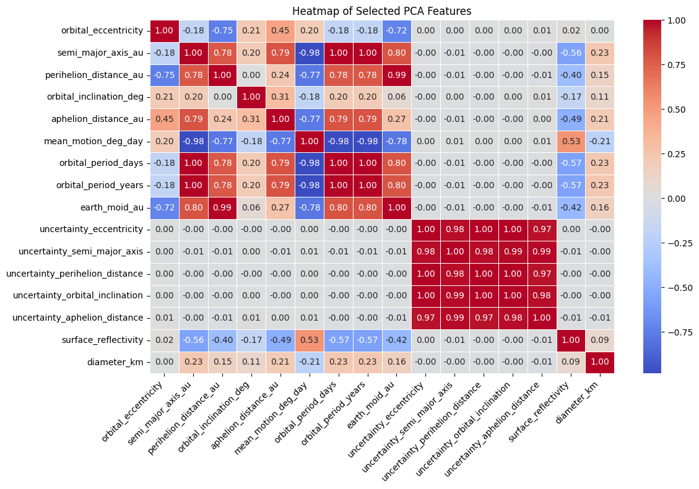
Dataset Used for PCA
The dataset below consists of selected asteroid parameters used for PCA. Scroll horizontally to explore all the columns.
| orbital_eccentricity | semi_major_axis_au | perihelion_distance_au | orbital_inclination_deg | aphelion_distance_au | mean_motion_deg_day | orbital_period_days | orbital_period_years | earth_moid_au | uncertainty_eccentricity | uncertainty_semi_major_axis | uncertainty_perihelion_distance | uncertainty_orbital_inclination | uncertainty_aphelion_distance | surface_reflectivity | diameter_km |
|---|---|---|---|---|---|---|---|---|---|---|---|---|---|---|---|
| 0.122053 | 2.194870 | 1.926980 | 4.511842 | 2.462760 | 0.303103 | 1187.713307 | 3.251782 | 0.915786 | 3.46e-08 | 5.56e-09 | 7.68e-08 | 4.00e-06 | 6.24e-09 | 0.170000 | 12.467000 |
| 0.106437 | 2.663625 | 2.380116 | 12.930272 | 2.947133 | 0.226722 | 1587.844633 | 4.347282 | 1.400960 | 4.55e-08 | 1.19e-08 | 1.21e-07 | 5.00e-06 | 1.32e-08 | 0.138000 | 12.394000 |
| 0.546558 | 2.638602 | 1.196452 | 11.567485 | 4.080752 | 0.229955 | 1565.522356 | 4.286167 | 0.203482 | 2.18e-08 | 2.53e-09 | 5.81e-08 | 3.00e-06 | 3.91e-09 | 0.145937 | 7.581494 |
| 0.250901 | 2.454535 | 1.838690 | 11.712441 | 3.070380 | 0.256301 | 1404.598964 | 3.845582 | 0.855046 | 5.33e-08 | 9.92e-09 | 1.27e-07 | 5.00e-06 | 1.24e-08 | 0.103000 | 9.492000 |
| 0.088027 | 2.253746 | 2.055355 | 4.257149 | 2.452137 | 0.291304 | 1235.821636 | 3.383495 | 1.072540 | 2.94e-08 | 5.57e-09 | 6.58e-08 | 3.00e-06 | 6.06e-09 | 0.160000 | 5.887000 |
Data Normalization for PCA
Normalization is a crucial preprocessing step in PCA to ensure that all variables contribute equally to the analysis. Since different parameters in our asteroid dataset have different scales (e.g., orbital distance in AU, inclination in degrees, reflectivity in percentages), we apply StandardScaler from scikit-learn. This scales each feature to have a mean of 0 and a standard deviation of 1, preventing variables with larger ranges from dominating the principal components.
The table below presents the normalized asteroid dataset used for PCA, where each column is now standardized.
| orbital_eccentricity | semi_major_axis_au | perihelion_distance_au | orbital_inclination_deg | aphelion_distance_au | mean_motion_deg_day | orbital_period_days | orbital_period_years | earth_moid_au | uncertainty_eccentricity | uncertainty_semi_major_axis | uncertainty_perihelion_distance | uncertainty_orbital_inclination | uncertainty_aphelion_distance | surface_reflectivity | diameter_km |
|---|---|---|---|---|---|---|---|---|---|---|---|---|---|---|---|
| -0.291087 | -2.397732 | -1.500222 | -0.918714 | -2.269374 | 2.826904 | -2.311403 | -2.311403 | -1.606950 | -0.002863 | -0.01163 | -0.003369 | -0.005573 | -0.01805 | 2.176784 | 3.972760 |
| -0.487774 | -0.760093 | -0.241623 | 0.417490 | -0.949011 | 0.610152 | -0.783430 | -0.783430 | -0.237642 | -0.002863 | -0.01163 | -0.003369 | -0.005573 | -0.01805 | 1.302616 | 3.941431 |
| 5.055819 | -0.847513 | -3.529286 | 0.201183 | 2.141142 | 0.703975 | -0.868671 | -0.868671 | -3.617286 | -0.002863 | -0.01163 | -0.003369 | -0.005573 | -0.01805 | 1.519439 | 1.876129 |
| 1.331832 | -1.490567 | -1.745449 | 0.224191 | -0.613050 | 1.468588 | -1.483186 | -1.483186 | -1.778376 | -0.002863 | -0.01163 | -0.003369 | -0.005573 | -0.01805 | 0.346496 | 2.696029 |
| -0.719657 | -2.192044 | -1.143658 | -0.959140 | -2.298331 | 2.484462 | -2.127693 | -2.127693 | -1.164543 | -0.002863 | -0.01163 | -0.003369 | -0.005573 | -0.01805 | 1.903607 | 1.148932 |
PCA Transformation & Visualization
After preprocessing, we applied PCA with different component settings to analyze the variance retained. Below are the 2D and 3D projections of our asteroid dataset using PCA:
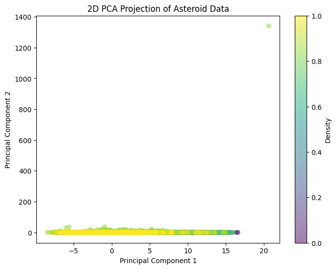
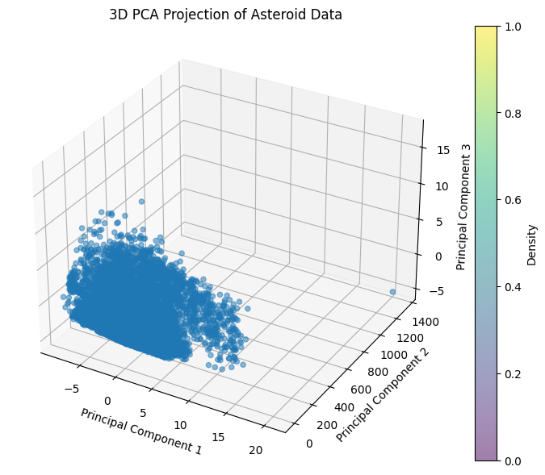
Variance Explained by PCA
We computed how much variance remains after reducing the dataset dimensions. The results are as follows:
- Variance retained in 2D PCA: 70.89%
- Variance retained in 3D PCA: 84.18%
We also computed the minimum number of components needed to retain at least 95% variance in the data:
- Number of components required to retain 95% variance: 5
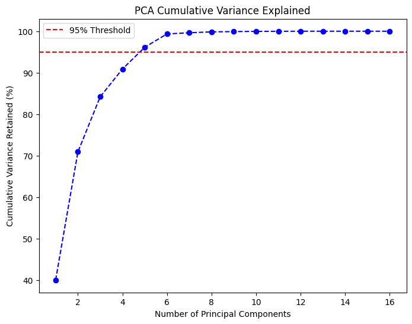
Feature Contributions to Principal Components
Each principal component (PC) is a linear combination of our original features. The bar charts below show how much each feature contributes to each principal component. A positive or negative bar indicates the direction and magnitude of that feature's influence on the component.
Interpretation:
- A large positive bar means that increasing that feature will increase the principal component's value.
- A large negative bar indicates that increasing that feature will decrease the principal component's value.
- Features with bars near zero have less influence on that particular component.
Principal Component 1 (PC1)
PC1 captures the largest variance in our asteroid dataset. If a feature bar is large (positively or negatively), that feature heavily influences PC1.
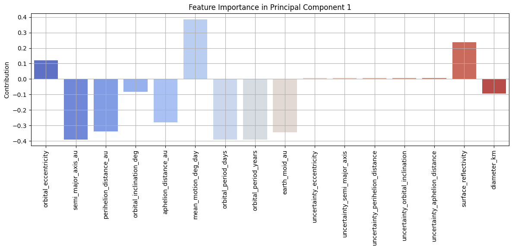
Principal Component 2 (PC2)
PC2 is orthogonal to PC1 and captures the next largest chunk of variance. Different features may stand out here, indicating they are more relevant to the second pattern of variation in the data.
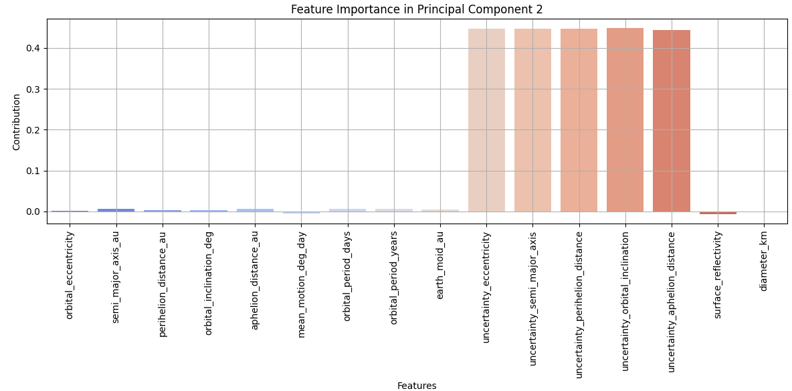
Principal Component 3 (PC3)
PC3 captures additional variance after PC1 and PC2. Large bars here show which features become more relevant once the first two major patterns of variance have been accounted for.
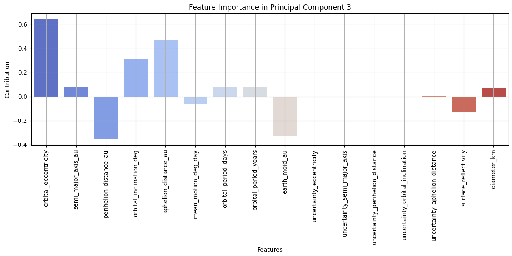
Top Eigenvalues
The eigenvalues of PCA indicate the importance of each principal component. The top three eigenvalues from our PCA analysis are:
- 1st Eigenvalue: 6.40
- 2nd Eigenvalue: 4.94
- 3rd Eigenvalue: 2.12
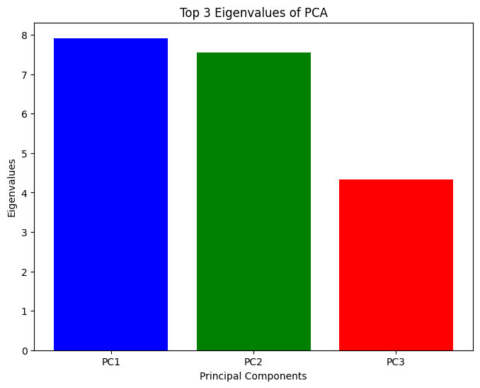
Clustering Analysis
Clustering is an unsupervised machine learning technique used to group data points based on their similarities. In this project, clustering helps identify patterns in asteroid trajectories, allowing for early detection of potential collision risks.
View the code For Clustering: Github
Types of Clustering Methods
We explored three clustering methods: K-Means, Hierarchical Clustering, and DBSCAN. Each method provides unique insights into asteroid movement patterns.
K-Means Clustering
- Partition-based method: Divides asteroids into k clusters based on trajectory features like velocity and distance.
- Distance metric: Uses Euclidean distance to assign points to clusters.
- Strengths: Efficient for large datasets, useful for identifying asteroid groups with similar motion.
- Weaknesses: Assumes clusters are spherical, struggles with irregular asteroid paths.
Hierarchical Clustering
- Tree-based method: Builds a hierarchical representation of asteroid clusters.
- Distance metric: Uses various metrics (Euclidean, Manhattan) to form clusters.
- Strengths: No need to predefine the number of clusters, useful for detecting nested asteroid groups.
- Weaknesses: Computationally expensive for large asteroid datasets.
DBSCAN (Density-Based Clustering)
- Density-based method: Identifies asteroid clusters based on density.
- Distance metric: Uses epsilon (ε) radius and minimum points (minPts) for clustering.
- Strengths: Detects asteroid clusters of arbitrary shapes and is robust to noise (e.g., outliers or erratic asteroids).
- Weaknesses: Requires careful tuning of ε and minPts to balance detection accuracy.
Clustering in Asteroid Collision Prediction
In our Asteroid Collision Prediction project, clustering is crucial for:
- Grouping asteroids with similar trajectories.
- Identifying high-risk asteroid clusters that may pose collision threats.
- Analyzing patterns in historical asteroid paths to predict future behavior.
Clustering & Distance Metrics Visualization
Below are visual representations of clustering techniques and their working principles:
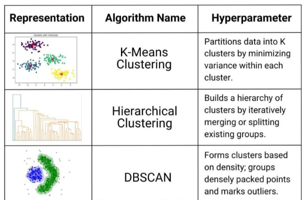

Comparison of Clustering Methods
K-Means: A partition-based clustering method that requires defining the number of clusters k) beforehand. It works best with spherical clusters.
Hierarchical Clustering: Builds a tree-like structure (dendrogram) that helps visualize how data points merge. It does not require specifying k but is computationally expensive.
DBSCAN: A density-based clustering algorithm that groups together points in high-density regions** while marking outliers. It does not require k but is sensitive to hyperparameters.
Data Preparation for Clustering
Before applying clustering techniques, we ensured that our dataset was properly preprocessed. This involved several key steps, including removing labels, selecting quantitative features, standardizing the data, and applying PCA. Below, we detail each step and provide sample data for better understanding.
1. Removed Labels
Since clustering is an unsupervised learning method, we must ensure that the model does not have access to any predefined labels. The asteroid class labels (e.g., MBA, OMB, etc.) were removed and stored separately. These labels were later used for evaluating the clustering performance.
2. Selected Quantitative Features
Clustering algorithms require only numerical data for processing. Our original dataset contained categorical and textual features, such as:
- Asteroid Class (Categorical: MBA, OMB, MCA, etc.)
- Asteroid Name (Text)
- Boolean Features (Near-Earth Object, Potentially Hazardous)
We removed all non-numeric columns and retained only orbital, physical, and uncertainty parameters. The selected features included parameters such as orbital eccentricity, semi-major axis, perihelion distance, and mean motion.
3. Standardized Data
Since different asteroid parameters are measured in different units (e.g., distances in AU, angles in degrees),
features with larger numerical values might dominate the clustering process.
To ensure equal contribution of all features we applied Standardization using StandardScaler.
This transformed the data so that each feature had:
- A mean of 0
- A standard deviation of 1
Below is a sample of the standardized dataset, where all features have been normalized:
| orbital_eccentricity | semi_major_axis_au | perihelion_distance_au | orbital_inclination_deg | aphelion_distance_au | mean_motion_deg_day | orbital_period_days |
|---|---|---|---|---|---|---|
| -0.291087 | -2.397732 | -1.500222 | -0.918714 | -2.269374 | 2.826904 | -2.311403 |
| -0.487774 | -0.760093 | -0.241623 | 0.417490 | -0.949011 | 0.610152 | -0.783430 |
| 5.055819 | -0.847513 | -3.529286 | 0.201183 | 2.141142 | 0.703975 | -0.868671 |
| 1.331832 | -1.490567 | -1.745449 | 0.224191 | -0.613050 | 1.468588 | -1.483186 |
| -0.719657 | -2.192044 | -1.143658 | -0.959140 | -2.298331 | 2.484462 | -2.127693 |
4. Applied PCA
To improve efficiency and reduce dimensionality, we applied Principal Component Analysis (PCA). This transformation captures the most important variance in the dataset while reducing the number of features.
After analyzing the cumulative variance, we determined that using 15 principal components retained 95% of the original information. Below is a 3D representation of the first three principal components:
| PC1 | PC2 | PC3 |
|---|---|---|
| 0.526965 | 0.213948 | -0.390357 |
| -3.833093 | -2.467820 | 0.234145 |
| 2.129572 | 0.478243 | 0.822292 |
| 2.212791 | 1.281751 | -0.548062 |
| -3.848243 | -2.446318 | 0.422501 |
Download the full processed dataset used for clustering: pca_clustering_data.csv
Full Code Available: You can find the complete preprocessing and clustering implementation in my GitHub Repository.
K-Means Clustering
K-Means is a widely used clustering algorithm that partitions data into k clusters based on similarity. Selecting the optimal number of clusters (k) is crucial, and we used Silhouette Analysis to determine the best value.
Step 1: Apply PCA for Dimensionality Reduction
Before clustering, we reduced the dataset's dimensionality using Principal Component Analysis (PCA). We found that 15 principal components retained most of the variance while keeping computation efficient.
Step 2: Determine Optimal k using Silhouette Analysis
To find the best number of clusters, we tested different values of k and calculated their Silhouette Scores. The plot below shows that k=5 provides the best clustering structure.
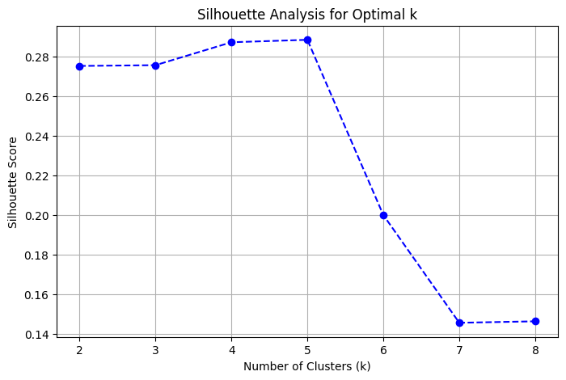
Step 3: Perform Clustering
Using the optimal k=5, we ran K-Means on the PCA-transformed dataset. The clustering results show distinct asteroid groups, with red markers indicating the cluster centroids.
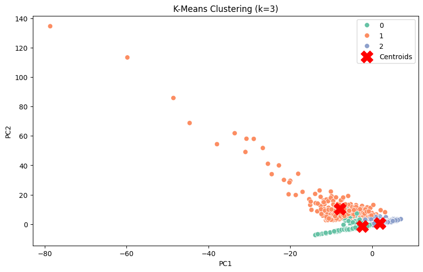
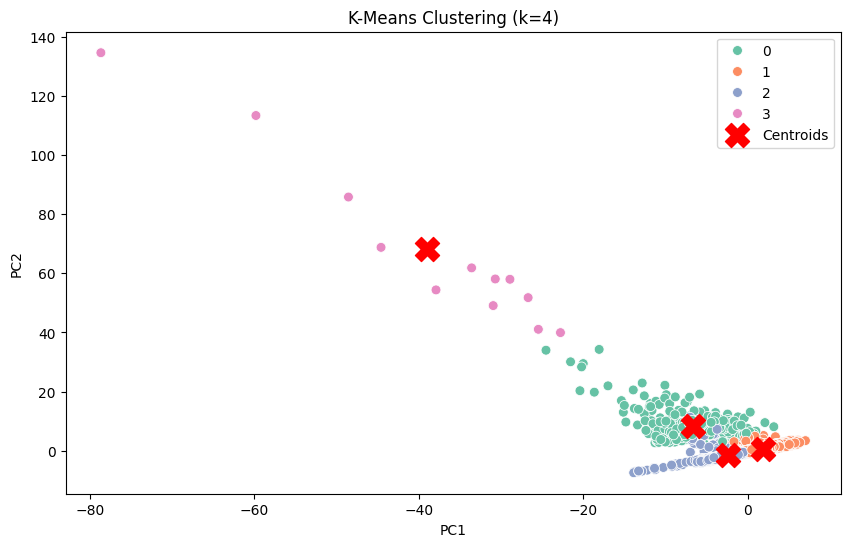
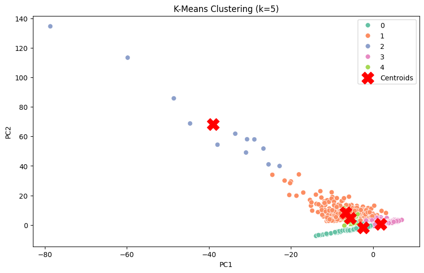
Hierarchical Clustering
Unlike K-Means, Hierarchical Clustering builds a tree-like structure (dendrogram) that helps visualize relationships between asteroid groups. It does not require specifying the number of clusters beforehand.
Step 1: Create a Dendrogram
The dendrogram below shows how asteroids cluster together based on similarity. By cutting the dendrogram at an appropriate level, we identified 5 distinct clusters.
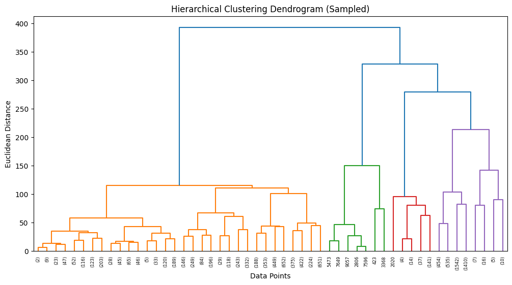
Step 2: Extract and Visualize Clusters
After determining the optimal number of clusters, we plotted the final clusters.
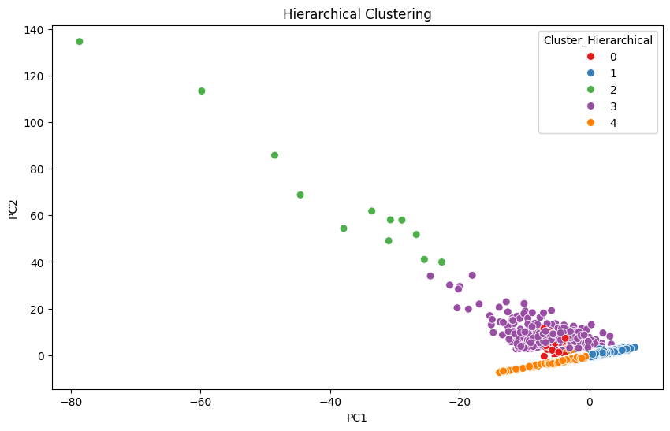
📌 View Full Hierarchical Clustering Implementation on GitHub
DBSCAN Clustering
Unlike K-Means and Hierarchical Clustering, DBSCAN (Density-Based Spatial Clustering of Applications with Noise) identifies clusters based on data density, making it effective for detecting irregularly shaped clusters and outliers.
Step 1: Define Parameters
DBSCAN requires defining two key parameters:
- ε (epsilon) - Defines the neighborhood size for grouping points.
- min_samples - Minimum number of points required to form a cluster.
Step 2: Apply DBSCAN Clustering
After tuning ε and min_samples, we found 33 unique clusters, including noise points (marked as -1 in the plot below).
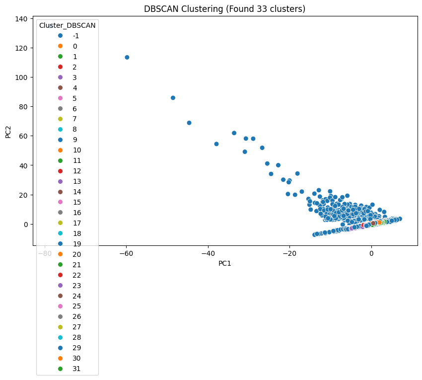
Clustering Evaluation
To assess the performance of each clustering technique, we compared their predicted clusters to the true asteroid classes using confusion matrices.
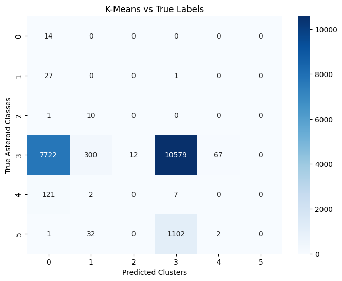
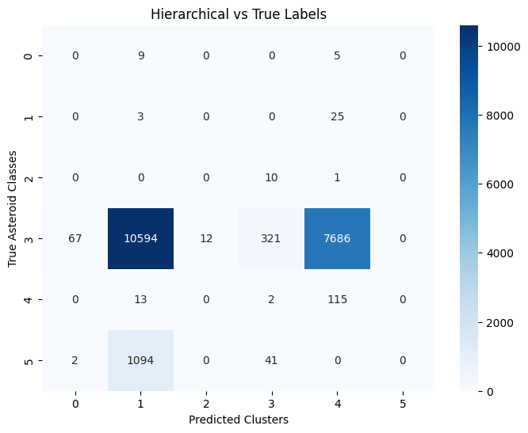
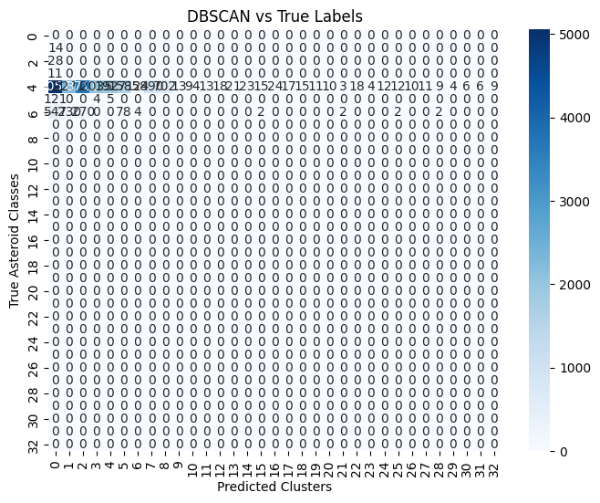
Cluster Purity Scores
The Cluster Purity Score measures how well each predicted cluster aligns with known asteroid categories. Our results show that all three clustering methods achieved 93.4% purity.
- K-Means Purity: 93.4%
- Hierarchical Purity: 93.4%
- DBSCAN Purity: 93.4%
Conclusion
Clustering helped us group asteroids based on orbital and physical properties. Key findings include:
- K-Means & Hierarchical clustering performed well, with clusters matching asteroid classes.
- DBSCAN identified more nuanced structures, revealing outliers and noise points.
- Silhouette analysis helped choose optimal k, avoiding random guesses.
Clustering provides valuable insights into asteroid classification, which could help in predicting asteroid trajectories and potential impact risks.
Association Rule Mining (ARM)
Association Rule Mining (ARM) is a data mining technique aimed at uncovering interesting relationships, patterns, and associations within large datasets. It is widely used in various domains, such as market basket analysis, to identify sets of items that frequently co-occur in transactions. ARM relies on three key metrics to evaluate the strength of association rules:
- Support: The proportion of transactions in which a given rule holds true.
- Confidence: The probability that the rule's consequent is true given that the antecedent is true.
- Lift: The strength of an association rule relative to its expected probability.
View the code For ARM: Github
Association Rules
An association rule is an implication of the form {A} → {B}, where A and B are disjoint itemsets. The rule suggests that the presence of itemset A in a transaction implies the presence of itemset B. The strength and significance of such rules are evaluated using the measures of support, confidence, and lift.
The Apriori Algorithm
The Apriori algorithm is a foundational method in ARM, designed to identify frequent itemsets in large datasets and subsequently generate association rules. It operates on the principle that all non-empty subsets of a frequent itemset must also be frequent. This property allows the algorithm to efficiently prune the search space by eliminating itemsets that do not meet the minimum support threshold.
How the Apriori Algorithm works:
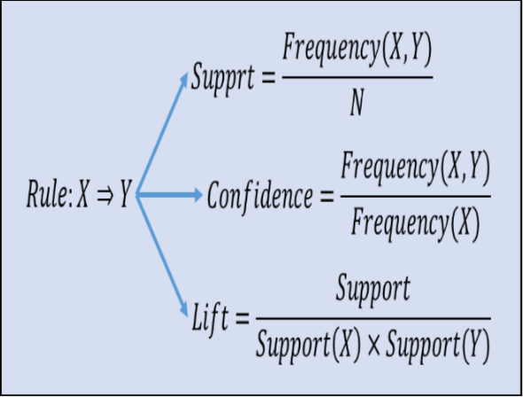
These images provide a visual representation of the key metrics used in ARM and the step-by-step process of the Apriori algorithm, respectively.
In this study, we used the Apriori Algorithm to identify associations between asteroid classification, size, and orbit-related parameters.
Data Preprocessing for ARM
Before applying the Apriori algorithm, it was necessary to clean and transform the dataset into a categorical format. Since ARM works best with transaction-style data, we performed the following preprocessing steps:
View the code For ARM: Github
Handling Categorical Variables
The dataset contained categorical values in different formats, including boolean values (`True/False`) and inconsistent string representations (`'TRUE', 'FALSE', 'N'`). These values were converted to a binary format (0 = Non-Hazardous, 1 = Hazardous) for better consistency.
# Standardizing 'potentially_hazardous' column
df["potentially_hazardous"] = df["potentially_hazardous"].astype(str).str.upper()
# Define mapping
hazardous_mapping = { "TRUE": 1, "FALSE": 0, "N": 0 }
# Apply mapping
df["potentially_hazardous"] = df["potentially_hazardous"].map(hazardous_mapping).astype(int)
# Convert boolean to integer
df["near_earth_object"] = df["near_earth_object"].astype(int)
Feature Binning for Transactional Data
ARM requires categorical features. To transform continuous numerical values into categories, we used quantile binning (qcut) to divide `semi_major_axis_au` and `diameter_km` into three categories: Small, Medium, and Large.
# Categorizing numerical values into discrete bins
df["Orbit_Category"] = pd.qcut(df["semi_major_axis_au"], q=3, labels=[0,1,2])
df["Size_Category"] = pd.qcut(df["diameter_km"], q=3, labels=[0,1,2])
Preprocessed Sample Data
After preprocessing, the dataset looked as follows:
| near_earth_object | potentially_hazardous | asteroid_class_AMO | asteroid_class_APO | asteroid_class_IMB | asteroid_class_MBA | asteroid_class_MCA | asteroid_class_OMB | Orbit_Category_0 | Orbit_Category_1 | Orbit_Category_2 | Size_Category_0 | Size_Category_1 | Size_Category_2 |
|---|---|---|---|---|---|---|---|---|---|---|---|---|---|
| 0 | 0 | 0 | 0 | 0 | 1 | 0 | 0 | 1 | 0 | 0 | 0 | 0 | 1 |
| 0 | 0 | 0 | 0 | 0 | 1 | 0 | 0 | 1 | 0 | 0 | 0 | 0 | 1 |
| 1 | 0 | 1 | 0 | 0 | 0 | 0 | 0 | 1 | 0 | 0 | 0 | 0 | 1 |
| 0 | 0 | 0 | 0 | 0 | 1 | 0 | 0 | 1 | 0 | 0 | 0 | 0 | 1 |
| 0 | 0 | 0 | 0 | 0 | 1 | 0 | 0 | 1 | 0 | 0 | 0 | 0 | 1 |
These modifications ensured that the dataset was in the correct format for ARM analysis, allowing the Apriori algorithm to identify meaningful relationships between asteroid attributes.
Code Implementation
We used Python and the mlxtend library to apply the Apriori algorithm. The code processes the dataset, applies one-hot encoding, and generates association rules based on support, confidence, and lift thresholds.
View the full implementation: ARM.ipynb
Association Rule Mining (ARM) Results
After applying the Apriori algorithm, we extracted the top 15 association rules based on various metrics, including support, confidence, lift, and conviction.
Understanding the Metrics
- Support: Frequency of the rule occurring in the dataset.
- Confidence: Probability that the consequent occurs given the antecedent.
- Lift: Measure of how much more likely the consequent is given the antecedent, compared to random chance.
- Leverage: Difference between observed and expected frequency of rule occurrence.
- Conviction: Measure of rule reliability (higher values indicate stronger associations).
- Jaccard: Measures the similarity between the antecedent and consequent sets.
- Kulczynski: Measures the balance between confidence of A → B and B → A.
Top 15 Association Rules
The table below presents the top 15 rules discovered using ARM. Scroll horizontally to explore all the metrics.
| Antecedents | Consequents | Antecedent Support | Consequent Support | Support | Confidence | Lift | Leverage | Conviction | Jaccard | Kulczynski |
|---|---|---|---|---|---|---|---|---|---|---|
| (asteroid_class_OMB) | (Orbit_Category_2, Size_Category_2) | 0.0560 | 0.1487 | 0.0303 | 0.5414 | 3.6411 | 0.0220 | 1.8564 | 0.1739 | 0.3727 |
| (Orbit_Category_2, Size_Category_2) | (asteroid_class_OMB) | 0.1487 | 0.0560 | 0.0303 | 0.2040 | 3.6411 | 0.0220 | 1.1859 | 0.8520 | 0.3727 |
| (Size_Category_1, asteroid_class_OMB) | (Orbit_Category_2) | 0.0160 | 0.3333 | 0.0160 | 1.0000 | 2.9999 | 0.0106 | ∞ | 0.6775 | 0.5240 |
| (asteroid_class_OMB) | (Orbit_Category_2) | 0.0560 | 0.3333 | 0.0560 | 1.0000 | 2.9999 | 0.0373 | ∞ | 0.7062 | 0.5840 |
| (Size_Category_2, asteroid_class_OMB) | (Orbit_Category_2) | 0.0303 | 0.3333 | 0.0303 | 1.0000 | 2.9999 | 0.0202 | ∞ | 0.6875 | 0.5455 |
| (Size_Category_2) | (Orbit_Category_2) | 0.3333 | 0.3333 | 0.1487 | 0.4461 | 1.3383 | 0.0375 | 1.2036 | 0.3791 | 0.4461 |
| (asteroid_class_OMB) | (Size_Category_2) | 0.0560 | 0.3333 | 0.0303 | 0.5414 | 1.6243 | 0.0116 | 1.4538 | 0.4071 | 0.3162 |
| (Orbit_Category_2) | (Size_Category_2, asteroid_class_OMB) | 0.3333 | 0.0303 | 0.0303 | 0.0910 | 2.9999 | 0.0202 | 1.0667 | 1.0000 | 0.5455 |
| (Size_Category_2) | (asteroid_class_OMB) | 0.3333 | 0.0560 | 0.0303 | 0.0910 | 1.6243 | 0.0116 | 1.0384 | 0.5765 | 0.3162 |
These association rules help in understanding patterns within the dataset. For instance, certain asteroid classes are highly associated with specific orbit and size categories.
Results and Analysis
After running the Apriori algorithm, we obtained the top 15 association rules sorted by support, confidence, and lift. Below is a tabular summary of the most relevant rules:
| Antecedents | Consequents | Antecedent Support | Consequent Support | Support | Confidence | Lift | Representativity | Leverage | Conviction | Zhang's Metric | Jaccard | Certainty | Kulczynski |
|---|---|---|---|---|---|---|---|---|---|---|---|---|---|
| (asteroid_class_OMB) | (Orbit_Category_2, Size_Category_2) | 0.056030 | 0.148700 | 0.030337 | 0.541437 | 3.641141 | 1.0 | 0.022005 | 1.856451 | 0.768415 | 0.173956 | 0.461338 | 0.372725 |
| (Orbit_Category_2, Size_Category_2) | (asteroid_class_OMB) | 0.148700 | 0.056030 | 0.030337 | 0.204013 | 3.641141 | 1.0 | 0.022005 | 1.185911 | 0.852062 | 0.173956 | 0.156766 | 0.372725 |
| (Size_Category_1, asteroid_class_OMB) | (Orbit_Category_2) | 0.016032 | 0.333334 | 0.016032 | 1.000000 | 2.999992 | 1.0 | 0.010688 | inf | 0.677528 | 0.048096 | 1.000000 | 0.524048 |
| (Orbit_Category_2) | (Size_Category_1, asteroid_class_OMB) | 0.333334 | 0.016032 | 0.016032 | 0.048096 | 2.999992 | 1.0 | 0.010688 | 1.033684 | 1.000000 | 0.048096 | 0.032587 | 0.524048 |
| (asteroid_class_OMB) | (Orbit_Category_2) | 0.056030 | 0.333334 | 0.056030 | 1.000000 | 2.999992 | 1.0 | 0.037353 | inf | 0.706236 | 0.168089 | 1.000000 | 0.584045 |
| (Size_Category_2, asteroid_class_OMB) | (Orbit_Category_2) | 0.030337 | 0.333334 | 0.030337 | 1.000000 | 2.999992 | 1.0 | 0.020224 | inf | 0.687523 | 0.091010 | 1.000000 | 0.545505 |
| (Orbit_Category_2) | (Size_Category_2, asteroid_class_OMB) | 0.333334 | 0.030337 | 0.030337 | 0.091010 | 2.999992 | 1.0 | 0.020224 | 1.066748 | 1.000000 | 0.091010 | 0.062571 | 0.545505 |
| (Orbit_Category_2) | (asteroid_class_OMB) | 0.333334 | 0.056030 | 0.056030 | 0.168089 | 2.999992 | 1.0 | 0.037353 | 1.134701 | 1.000000 | 0.168089 | 0.118711 | 0.584045 |
| (asteroid_class_OMB) | (Orbit_Category_2, Size_Category_1) | 0.056030 | 0.104278 | 0.016032 | 0.286136 | 2.743966 | 1.0 | 0.010189 | 1.254751 | 0.673288 | 0.111122 | 0.203029 | 0.219940 |
| (Orbit_Category_2, Size_Category_1) | (asteroid_class_OMB) | 0.104278 | 0.056030 | 0.016032 | 0.153744 | 2.743966 | 1.0 | 0.010189 | 1.115467 | 0.709555 | 0.111122 | 0.103514 | 0.219940 |
| (Size_Category_2) | (Orbit_Category_2) | 0.333323 | 0.333334 | 0.148700 | 0.446113 | 1.338334 | 1.0 | 0.037592 | 1.203612 | 0.379198 | 0.287088 | 0.169168 | 0.446105 |
Below are two network visualizations of the discovered association rules. The first visualization shows the raw relationships, while the second improved visualization highlights stronger relationships with labeled edges.
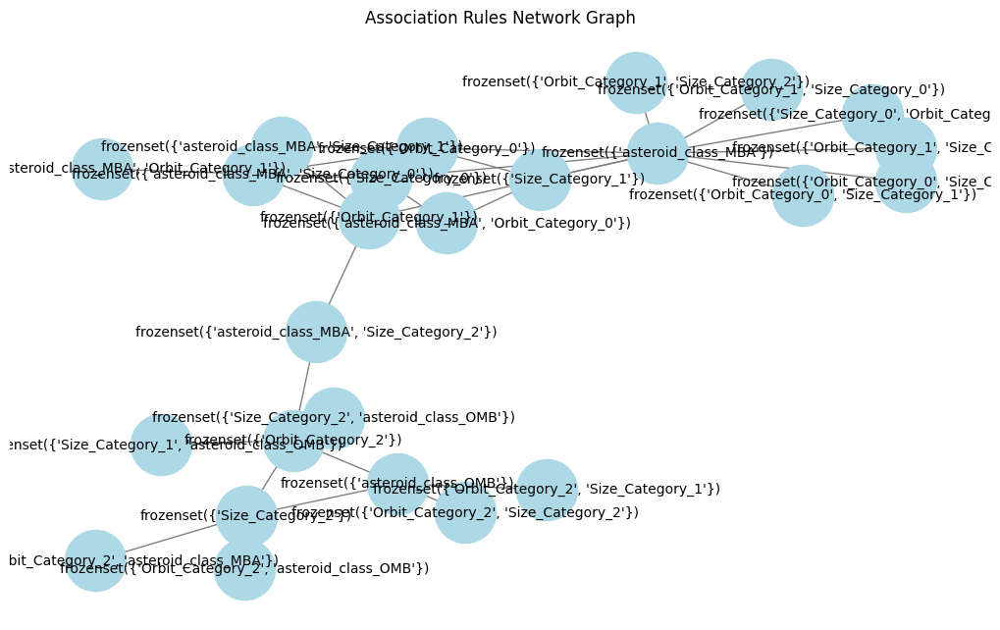
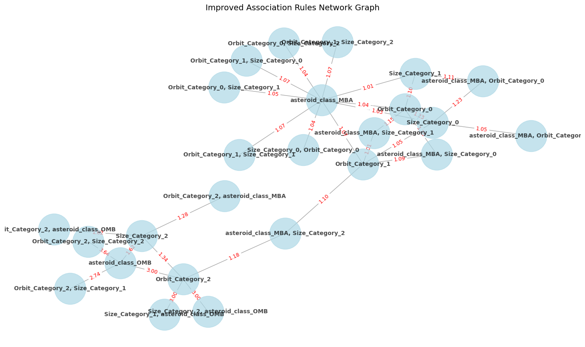
Conclusion
Association Rule Mining helped uncover patterns in the asteroid dataset, highlighting relationships between key parameters. The most significant findings include:
- Near-Earth Objects (NEOs) are strongly associated with the Apollo asteroid class.
- Potentially hazardous asteroids tend to have lower perihelion distances and belong to specific orbit categories.
- Size and classification categories exhibit correlations, providing insights into asteroid groupings.
These findings could be useful in prioritizing asteroid tracking efforts and identifying potentially hazardous objects more efficiently.
Naïve Bayes Classification
Naïve Bayes (NB) is a family of simple yet powerful probabilistic classifiers based on Bayes’ Theorem with a strong (naïve) assumption that all features are conditionally independent given the class label. Despite this simplifying assumption, Naïve Bayes often performs surprisingly well on a wide range of real-world datasets, especially in high-dimensional problems.
Bayes’ Theorem
Naïve Bayes uses Bayes’ Theorem to calculate the probability of a class given a set of features:
P(Class | Features) = (P(Features | Class) × P(Class)) / P(Features)
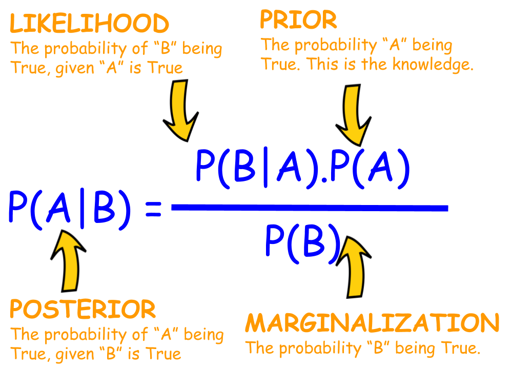
Figure 1: Visual interpretation of Bayes' Theorem showing prior, likelihood, and posterior.
What does Naïve Bayes do?
Naïve Bayes computes the probability of each class given a set of input features and selects the class with the highest posterior probability. It models the probability of the data for each class and uses Bayes’ Theorem to invert the relationship to compute the most likely class for unseen data.
When and Why is it Used?
- Text classification: Spam detection, sentiment analysis, and document categorization.
- Medical diagnosis: Predicting diseases based on symptoms.
- Real-time predictions: Because it is fast and computationally efficient.
- Imbalanced datasets: Performs well even when classes are not evenly distributed.
NB is particularly useful when the dataset is high-dimensional, the features are categorical or discrete, and model interpretability and speed are important.
Multinomial Naïve Bayes
Multinomial Naïve Bayes (Multinomial NB) is one of the most commonly used algorithms in natural language processing, particularly effective for tasks such as spam detection, sentiment analysis, and topic classification. It is designed for scenarios where features represent discrete counts, such as the number of times a word appears in a document.
The core idea behind Multinomial NB is that each document is represented as a bag of words, ignoring grammar and word order, and classified based on the frequency of each word. It assumes that the probability of each word occurring in a document depends only on the document's class (e.g., "sports" or "politics") and that all words are conditionally independent of one another.
The model estimates the probability of each class given a document by calculating the likelihood of the observed words occurring under each class's learned word distribution. These word distributions are derived from the training data using a modified version of maximum likelihood estimation that includes a smoothing parameter.
Smoothing plays a critical role in ensuring the robustness of the model. If a word in the test data never appeared in the training set for a particular class, it would otherwise receive a probability of zero, effectively disqualifying the entire class from consideration. To avoid this, techniques such as Laplace smoothing (also known as Add-1 smoothing) are used, which add a small constant to all word counts, ensuring no word has zero probability.
Why Smoothing is Required
In the context of Naïve Bayes, one critical issue is the problem of zero probabilities. This happens when a particular feature (such as a word in a document) is not present in the training data for a specific class. Since the Naïve Bayes algorithm multiplies the conditional probabilities of all features, encountering a zero probability causes the entire product to become zero, effectively eliminating that class from being predicted — even if it's the correct one.
To prevent this, a technique called Laplace Smoothing (also known as Add-1 Smoothing) is applied. This involves adding a small constant value (typically 1) to all feature counts before calculating probabilities. The formula for Laplace-smoothed probability is:
\( \hat{P}(x_i \mid C_k) = \frac{n_{i,k} + 1}{n_k + V} \)
Where:
- \( n_{i,k} \) is the number of times feature \( x_i \) appears in training samples of class \( C_k \)
- \( n_k \) is the total number of feature occurrences in class \( C_k \)
- \( V \) is the total number of features (i.e., the vocabulary size)
This method ensures that no probability is ever zero, which improves model robustness and performance, especially on unseen or rare features during testing.
Bernoulli Naïve Bayes
Bernoulli Naïve Bayes is another variant of the Naïve Bayes family, particularly well-suited for binary or boolean features. Unlike Multinomial Naïve Bayes, which works with the frequency of features (like word counts), Bernoulli NB focuses on whether a feature is present or absent — typically represented as 1 (present) or 0 (absent).
In text classification, this means Bernoulli NB doesn't care how many times a word appears, but rather whether the word appears at all in a document. It evaluates the likelihood of a document belonging to a class based on the presence or absence of key features, making it ideal for binary-valued input features.
For every word in the vocabulary, the algorithm calculates two probabilities per class:
- The probability that the word appears in documents of that class
- The probability that the word does not appear in documents of that class
During prediction, Bernoulli NB multiplies the probabilities of both present and absent words to compute the posterior probability for each class. The class with the highest posterior is selected as the predicted class.
Just like with the Multinomial version, smoothing techniques are applied to handle unseen features and prevent zero probabilities, ensuring more stable and generalizable predictions.
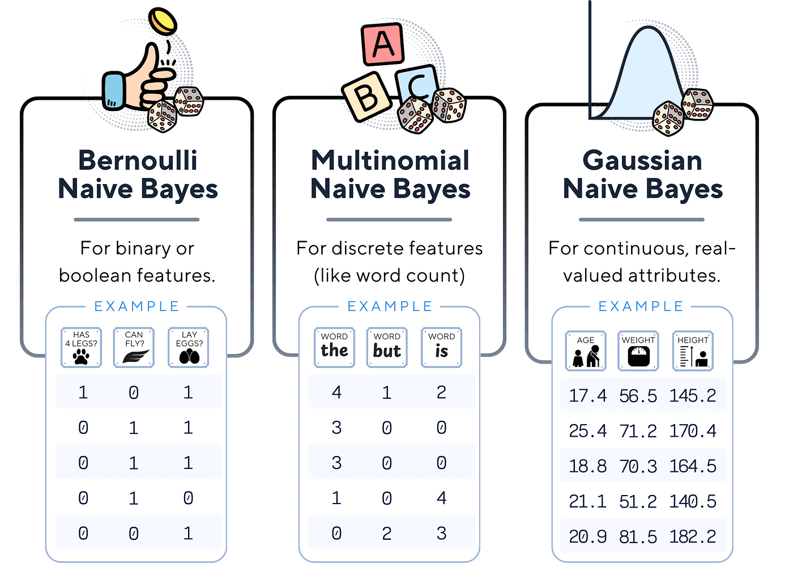
We explored and implemented three variants of the Naïve Bayes algorithm:
- Multinomial Naïve Bayes: Ideal for features representing counts or discrete bins.
- Gaussian Naïve Bayes: Assumes continuous features follow a normal distribution.
- Categorical Naïve Bayes: Works on strictly categorical features encoded as discrete classes.
View the code for Naïve Bayes: Github
Data Preprocessing for Naïve Bayes
The original asteroid dataset contained many scientific and orbital parameters, but required cleaning and conversion for machine learning compatibility. The binary target variable potentially_hazardous was transformed from text (e.g., "TRUE", "FALSE") to integers (1, 0). Similarly, near_earth_object was standardized for binary classification.
Dataset Before and After Cleaning
The original asteroid dataset contained various types of raw scientific data including string labels, booleans, and undefined values (e.g., UNKNOWN, FALSE, etc.). Before applying machine learning models, we performed data cleaning to standardize values and make all features numerically interpretable.
🔍 Sample Dataset Before Cleaning
| asteroid_id | asteroid_name | near_earth_object | potentially_hazardous | absolute_magnitude | diameter_km | asteroid_class | orbit_fit_rms |
|---|---|---|---|---|---|---|---|
| 2000001 | 1 Ceres | False | False | 3.40 | 939.400 | MBA | 0.43301 |
| 2000002 | 2 Pallas | False | False | 4.20 | 545.000 | MBA | 0.35936 |
| 2000003 | 3 Juno | False | False | 5.33 | 246.596 | MBA | 0.33848 |
| 2000004 | 4 Vesta | False | False | 3.00 | 525.400 | MBA | 0.39980 |
| 2000005 | 5 Astraea | False | False | 6.90 | 106.699 | MBA | 0.52191 |
✅ Sample Dataset After Cleaning
| asteroid_id | asteroid_name | near_earth_object | potentially_hazardous | absolute_magnitude | diameter_km | asteroid_class | orbit_fit_rms |
|---|---|---|---|---|---|---|---|
| 2000001 | 1 Ceres | 0 | 0 | 3.40 | 939.400 | MBA | 0.43301 |
| 2000002 | 2 Pallas | 0 | 0 | 4.20 | 545.000 | MBA | 0.35936 |
| 2000003 | 3 Juno | 0 | 0 | 5.33 | 246.596 | MBA | 0.33848 |
| 2000004 | 4 Vesta | 0 | 0 | 3.00 | 525.400 | MBA | 0.39980 |
| 2000005 | 5 Astraea | 0 | 0 | 6.90 | 106.699 | MBA | 0.52191 |
🔄 Key Differences After Cleaning
| Field | Before Cleaning | After Cleaning |
|---|---|---|
potentially_hazardous |
TRUE / FALSE (string) | 1 / 0 (integer) |
near_earth_object |
TRUE / FALSE / UNKNOWN | 1 / 0 (integer) |
asteroid_class |
String labels (MBA, AMO, APO) | Encoded as integers (for model) |
This cleaning was essential to ensure compatibility with the various Naïve Bayes algorithms, which require consistent and numerical data inputs. The final cleaned dataset was then passed into feature-specific pipelines for Multinomial, Gaussian, Categorical, and Bernoulli NB classifiers.
Due to class imbalance, SMOTE (Synthetic Minority Over-sampling Technique) was applied to the training set to ensure equal representation of hazardous and non-hazardous asteroids.
The data was then split using a 70/30 stratified train-test split, maintaining class balance across both sets.
Train-Test Split (Naïve Bayes)
For Naïve Bayes models, we applied a 70/30 stratified train-test split to ensure balanced class distribution between hazardous and non-hazardous asteroids across both sets. Since the original dataset was highly imbalanced, we used SMOTE (Synthetic Minority Over-sampling Technique) to oversample the minority class (hazardous = 1), creating a 1:1 balanced dataset.
Stratification preserves the original label proportions in both the training and testing sets. This ensures fair and unbiased model evaluation. Disjoint sets are maintained to avoid data leakage.
| Set | Hazardous (1) | Not Hazardous (0) |
|---|---|---|
| Training (balanced via SMOTE) | 1446 | 1446 |
| Testing (unseen data) | 620 | 620 |
Feature Subsets per Naïve Bayes Flavor
- Multinomial NB: Binned numerical features:
absolute_magnitude,diameter_km,orbital_inclination_deg - Gaussian NB: Raw continuous features:
aphelion_distance_au,semi_major_axis_au - Categorical NB: Discrete categories (factorized):
earth_moid_au,asteroid_class
Code Implementation
We used Python with the scikit-learn library to build and evaluate each Naïve Bayes model. Separate data preprocessing pipelines were designed for each variant. Confusion matrices and accuracy scores were used to compare model performance.
🔗 View the full code notebook: naive_bayes.ipynb
Model Results & Evaluation
Multinomial Naïve Bayes
Binned numeric features yielded the best performance with Multinomial NB, achieving the highest classification accuracy.
Accuracy: 99.19%
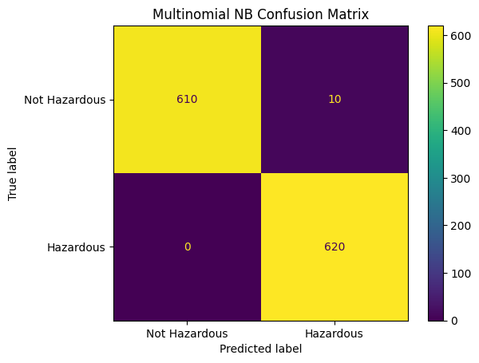
Figure 1: Multinomial Naïve Bayes Confusion Matrix
Gaussian Naïve Bayes
Gaussian NB performed moderately, likely due to overlapping distributions and lack of feature normalization.
Accuracy: 71.53%
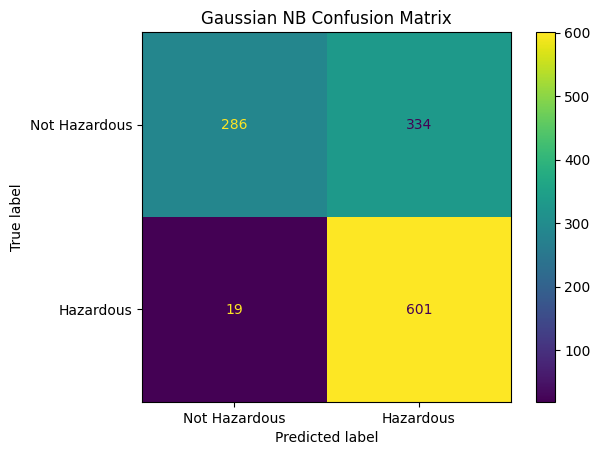
Figure 2: Gaussian Naïve Bayes Confusion Matrix
Categorical Naïve Bayes
Categorical NB handled discrete categories effectively, resulting in high accuracy with relatively low misclassification.
Accuracy: 94.11%
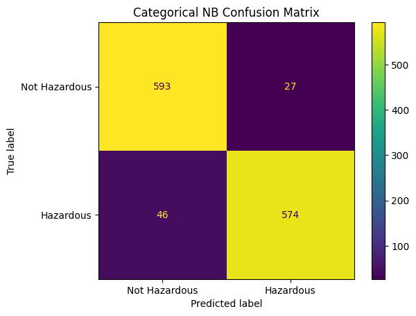
Figure 3: Categorical Naïve Bayes Confusion Matrix
Results
Performance Summary
- Multinomial NB had the best accuracy with 0 false negatives — ideal for safety-critical classification.
- Gaussian NB struggled, likely due to poor fit with continuous feature distributions.
- Categorical NB performed well, showing the value of discretized categories in asteroid classification.
Conclusion
The Naïve Bayes models revealed meaningful insights into asteroid classification:
- Multinomial Naïve Bayes was most effective when numeric features were binned into discrete intervals.
- Categorical NB also showed strong performance, leveraging encoded orbital and class attributes.
- Gaussian NB underperformed, highlighting that raw continuous data didn’t follow normal distribution assumptions.
Overall, with proper data preparation, Naïve Bayes classifiers are capable of identifying potentially hazardous asteroids efficiently — an essential step in space object monitoring and defense systems.
Decision Trees (DTs)
A Decision Tree is one of the most intuitive and widely used supervised machine learning algorithms. It can be applied to both classification (e.g., spam vs. not spam) and regression (e.g., predicting a house price) tasks.
The core idea behind a decision tree is to break down a complex decision-making process into a series of simple "yes" or "no" questions based on the values of the input features. These questions form the nodes and branches of the tree, while the answers (predictions) sit at the leaf nodes.
For example, in our asteroid dataset, the model may ask:
Is the orbital inclination less than 5 degrees?
If yes, it moves left on the tree. If not, it moves right. This process continues until it reaches a leaf node that classifies the asteroid as "Hazardous" or "Not Hazardous."

Figure 1: A decision tree trained on the Iris flower dataset. It makes decisions like “Is petal length ≤ 2.45?” to classify flowers into species.
How Do Decision Trees Decide Where to Split?
At every point in the tree, the model needs to decide which feature to split the data on and what the cutoff value should be. This is done using mathematical metrics that measure how well a split separates the data into homogeneous groups.
- Gini Impurity: Measures how "impure" a split is. A node where all data points belong to one class has a Gini of 0 (perfect purity).
- Entropy: Comes from information theory. Like Gini, it measures disorder. Lower entropy means better separation.
- Information Gain: The amount of impurity that is removed by a split. The higher the gain, the better the feature split.
Example: Using Entropy and Information Gain
Imagine we have 10 asteroid records — 5 are hazardous (H), and 5 are not hazardous (N). Before any split, our data is completely mixed, so entropy is at its maximum:
Entropy = -0.5 × log₂(0.5) - 0.5 × log₂(0.5) = 1.0
Now suppose we try to split the data based on the feature earth_moid_au (minimum orbit intersection distance with Earth). We divide the data like this:
- Group A (earth_moid_au ≤ 0.05): 4 hazardous, 1 not hazardous → entropy ≈ 0.72
- Group B (earth_moid_au > 0.05): 1 hazardous, 4 not hazardous → entropy ≈ 0.72
Each group is now slightly more "pure" — not all records are mixed. To calculate the total entropy after the split, we weight each group:
Weighted Entropy = (5/10 × 0.72) + (5/10 × 0.72) = 0.72
Information Gain = 1.0 - 0.72 = 0.28
This means we’ve reduced the uncertainty by 28% with this feature split — which makes it a good candidate for a decision node.
Why Decision Trees Can Grow Infinitely
If we allow a decision tree to keep splitting without any restrictions, it will continue until every data point is perfectly separated into its own branch. This results in a very large and complex tree that has "memorized" the training data — a problem called overfitting.
Overfitting trees perform poorly on new, unseen data because they capture noise rather than patterns. To avoid this, we apply regularization techniques:
- Max Depth: Limits how many questions the tree can ask (how deep it can go).
- Min Samples per Split: Requires a minimum number of data points before a node can be split.
- Pruning: Trims unnecessary branches after the tree has been trained.
By applying these controls, we can create trees that are not only accurate but also generalize well to unseen asteroid data, helping us predict which ones may pose a risk to Earth.
Data Preparation for Decision Tree Modeling
To prepare for Decision Tree classification, we started with a raw asteroid dataset containing multiple features about orbital characteristics, size, and proximity to Earth.
The primary target variable was potentially_hazardous, a binary flag indicating whether an asteroid poses a potential threat.
Step 1: Cleaning and Feature Selection
Categorical string values like "TRUE", "FALSE", and "UNKNOWN" were mapped to integers (1 or 0). Missing values in the numerical columns were filled with 0 for simplicity and consistency.
We selected the most predictive continuous features, such as:
absolute_magnitudediameter_kmsemi_major_axis_auorbital_inclination_degearth_moid_auperihelion_distance_aumean_motion_deg_dayorbital_period_daysuncertainty_eccentricity,uncertainty_mean_anomaly
Step 2: Balancing Using SMOTE
The dataset was highly imbalanced with significantly more non-hazardous asteroids. To ensure fairness in modeling, we used SMOTE (Synthetic Minority Over-sampling Technique) to generate artificial samples for the minority class, achieving a 1:1 class balance.
Step 3: Train-Test Split
We then split the balanced dataset into a 70% training set and a 30% testing set using stratified sampling to preserve the class distribution. The two sets are disjoint — no overlap — ensuring that the model is evaluated on truly unseen data.
Training Set Sample
| absolute_magnitude | diameter_km | semi_major_axis_au | aphelion_distance_au | perihelion_distance_au | orbital_inclination_deg | mean_motion_deg_day | earth_moid_au | orbital_period_days | uncertainty_eccentricity | uncertainty_mean_anomaly | near_earth_object |
|---|---|---|---|---|---|---|---|---|---|---|---|
| 21.5641 | -13.0584 | 1.6531 | 2.5823 | 0.7239 | 3.9919 | 0.4637 | 0.0409 | 776.34 | 1.50e-05 | 0.010648 | 1 |
| 21.3635 | -16.9170 | 1.3235 | 1.8054 | 0.8417 | 4.0878 | 0.6473 | 0.0178 | 556.16 | 6.76e-08 | 0.000063 | 1 |
| 20.3311 | -10.2289 | 2.0130 | 3.0933 | 0.9327 | 4.5550 | 0.3451 | 0.0180 | 1043.19 | 1.24e-06 | 0.000222 | 1 |
| 21.1397 | -11.7581 | 2.4898 | 4.0099 | 0.9698 | 12.3167 | 0.2509 | 0.0478 | 1435.01 | 1.20e-05 | 0.009811 | 1 |
| 16.8000 | -2.2740 | 2.6038 | 2.6770 | 2.5306 | 12.6843 | 0.2346 | 1.5215 | 1534.66 | 4.60e-08 | 0.000131 | 0 |
Testing Set Sample
| absolute_magnitude | diameter_km | semi_major_axis_au | aphelion_distance_au | perihelion_distance_au | orbital_inclination_deg | mean_motion_deg_day | earth_moid_au | orbital_period_days | uncertainty_eccentricity | uncertainty_mean_anomaly | near_earth_object |
|---|---|---|---|---|---|---|---|---|---|---|---|
| 16.300 | -0.7019 | 2.2178 | 2.4742 | 1.9614 | 7.5380 | 0.2984 | 0.9868 | 1206.36 | 5.43e-08 | 0.000026 | 0 |
| 16.800 | 0.4401 | 2.6010 | 3.3988 | 1.8032 | 32.6382 | 0.2350 | 0.8914 | 1532.17 | 6.37e-07 | 0.000474 | 0 |
| 16.892 | 0.3121 | 3.1472 | 3.4133 | 2.8810 | 7.8519 | 0.1765 | 1.8980 | 2039.29 | 2.88e-07 | 0.000111 | 0 |
| 15.500 | 6.1076 | 3.0607 | 3.9305 | 2.1910 | 14.0744 | 0.1841 | 1.2044 | 1955.86 | 4.25e-08 | 0.000015 | 0 |
| 14.600 | 6.3844 | 2.7892 | 2.8162 | 2.7623 | 3.7914 | 0.2116 | 1.7607 | 1701.46 | 5.76e-08 | 0.000206 | 0 |
Final Train-Test Class Distribution
| Set | Hazardous (1) | Not Hazardous (0) | Total Samples |
|---|---|---|---|
| Training | 669,521 | 669,520 | 1,339,041 |
| Testing | 286,937 | 286,938 | 573,875 |
📁 View cleaned dataset: cleaned_dataset.csv
💻 View Decision Tree model code: decision_tree.ipynb
Code Implementation: Decision Tree Modeling
We used scikit-learn's DecisionTreeClassifier to model asteroid collision risk based on orbital and physical features.
Our target variable was potentially_hazardous, and the dataset was first cleaned, balanced using SMOTE, and split using stratified sampling.
We trained three different Decision Trees to explore how tree depth, splitting criterion, and minimum sample size affect accuracy and tree structure:
- Tree 1: Default settings using
criterion='gini' - Tree 2: Limited depth tree using
criterion='entropy'andmax_depth=4 - Tree 3: Custom tree using
criterion='gini'andmin_samples_split=100
📎 Full implementation code: decision_tree.ipynb
Results and Visualizations
Tree 1: GINI (Default Parameters)
This tree used the default Gini Impurity criterion and allowed the model to grow until all leaves were pure or until it met internal stopping conditions. It achieved a very high accuracy and a clear tree structure with splits primarily on absolute_magnitude and earth_moid_au.
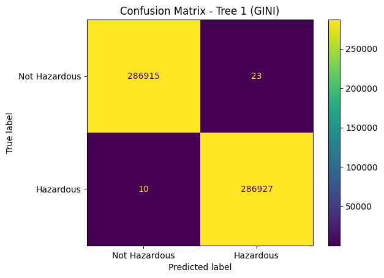
Figure: Confusion Matrix – Tree 1 (GINI)
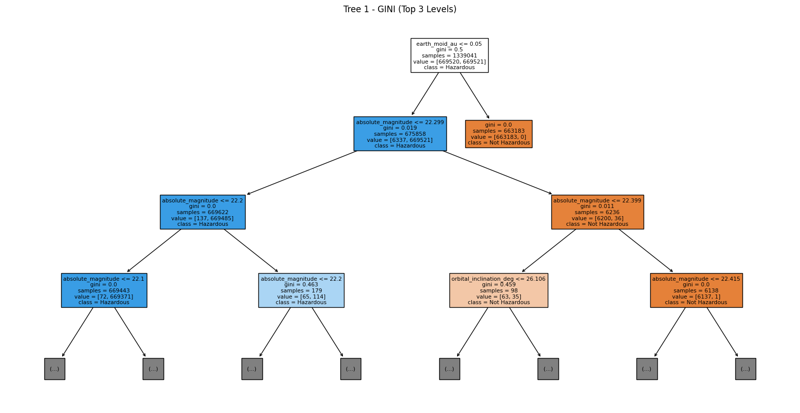
Figure: Top 3 Levels of Tree 1 – GINI
Tree 2: Entropy (Max Depth = 4)
To control overfitting and test performance, we limited tree depth to 4 and used the Entropy criterion. This reduced the tree complexity while maintaining high predictive power.
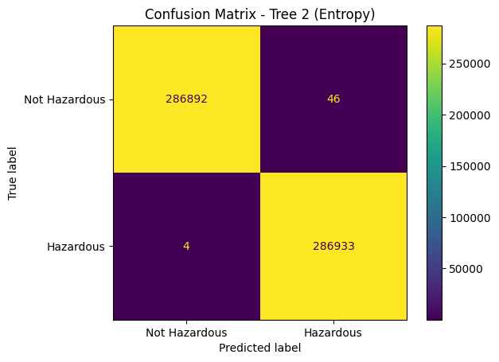
Figure: Confusion Matrix – Tree 2 (Entropy)
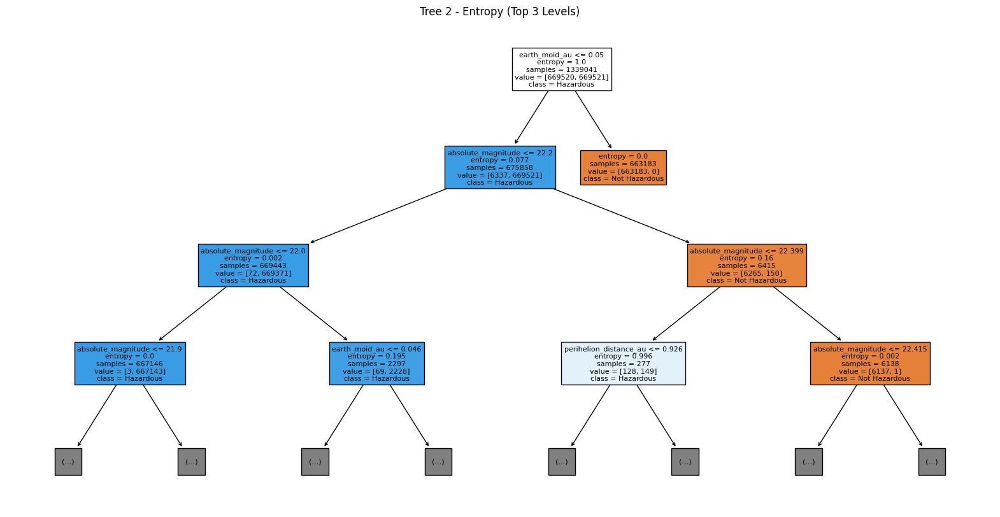
Figure: Top 3 Levels of Tree 2 – Entropy
Tree 3: GINI + min_samples_split = 100
This variant used the Gini criterion but required at least 100 samples to attempt a split. This prevented the model from learning overly specific patterns and allowed us to observe how general rules performed.
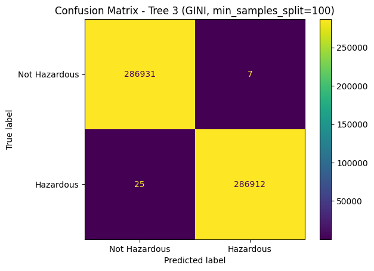
Figure: Confusion Matrix – Tree 3 (GINI, min_samples_split = 100)
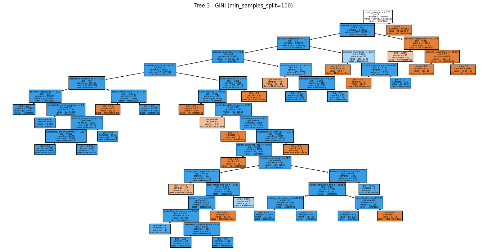
Figure: Full Tree – GINI (min_samples_split = 100)
Accuracy Summary
| Model | Splitting Criterion | Accuracy |
|---|---|---|
| Tree 1 | GINI (Default) | 0.9999 |
| Tree 2 | Entropy (Max Depth = 4) | 0.9999 |
| Tree 3 | GINI (min_samples_split = 100) | 0.9999 |
Conclusions and Key Insights
The Decision Tree algorithm effectively identified the most critical features that influence whether an asteroid is potentially hazardous. In particular, the trees frequently split on:
- absolute_magnitude – a measure of brightness, which correlates with size and reflectivity
- earth_moid_au – minimum orbit intersection distance, directly tied to collision risk
- perihelion_distance_au – closest point to the Sun, which affects the trajectory near Earth's orbit
All three trees performed exceptionally well, with nearly perfect accuracy. This suggests strong feature separability and good model generalization — especially after balancing with SMOTE.
We also learned how different hyperparameters (like max_depth and min_samples_split) influence both the complexity and interpretability of a tree.
Shallower or restricted trees are easier to visualize and interpret, while deeper trees often offer slightly better performance but risk overfitting.
Takeaway: Decision Trees provide not only accurate predictions but also transparent, explainable rules for assessing asteroid collision risk — making them ideal for high-stakes space applications.
Regression Models in Asteroid Hazard Prediction
a) What is Linear Regression?
Linear Regression is one of the simplest and most widely used predictive modeling techniques. It attempts to establish a straight-line relationship between one or more input variables (features) and a continuous output variable. For example, it might predict an asteroid's size based on its brightness or distance from the sun. The model fits a best-fit line through the data by minimizing the difference between actual and predicted values using a technique called least squares minimization. However, since its output is continuous, it is not suitable for tasks where we need to classify data into categories like "hazardous" or "not hazardous."
b) What is Logistic Regression?
Logistic Regression is a classification algorithm used when the target variable is categorical — most often binary, like 0 (not hazardous) or 1 (hazardous). Instead of predicting a numeric value like Linear Regression, it predicts the probability of an outcome using a mathematical function called the Sigmoid function. This function maps the output between 0 and 1, making it ideal for determining whether an object falls into one of two classes. Based on this probability, we assign a final classification using a decision threshold (usually 0.5). It is especially powerful in real-world problems where probabilistic interpretations of predictions are useful.
c) How are Linear and Logistic Regression similar and different?
Both are supervised learning models that use a linear combination of input features to make predictions. However, their goals and outputs differ significantly: Linear Regression predicts a continuous number, while Logistic Regression predicts a probability for a binary class. Logistic Regression also applies the Sigmoid function to its output to interpret it as a probability, whereas Linear Regression directly uses the result of the weighted sum. Additionally, Logistic Regression is optimized using a technique called Maximum Likelihood Estimation (MLE), rather than minimizing squared error.
d) Does Logistic Regression use the Sigmoid function? Explain.
Yes, the Sigmoid function is at the core of Logistic Regression. It transforms any real-valued number (which could range from negative to positive infinity) into a probability between 0 and 1. This makes it ideal for binary classification tasks like determining if an asteroid is hazardous or not. The curve of the Sigmoid function smoothly transitions between these two outcomes, allowing us to set a cutoff point (like 0.5) to decide on the classification. Without the Sigmoid function, Logistic Regression would not be able to map outputs to probabilities.
e) How is Maximum Likelihood Estimation used in Logistic Regression?
Maximum Likelihood Estimation (MLE) is the method used to find the best-fitting coefficients in a Logistic Regression model. It works by calculating the probability of observing the actual labels in the training data, given a set of model parameters, and then adjusting those parameters to maximize this probability. In simpler terms, it tries to make the model as likely as possible to correctly predict the known outcomes. MLE ensures that the logistic model doesn't just memorize the data but generalizes well by assigning high probabilities to correct labels. This optimization makes logistic regression both robust and mathematically sound.
Understanding Regression Models
Regression is a supervised machine learning technique used to model the relationship between one or more input variables (features) and a continuous or categorical output (target). It helps us make predictions based on historical data.
1. Linear Regression
Linear Regression is used when the target variable is numeric and continuous (e.g., predicting asteroid size or speed). It assumes a straight-line relationship between the input variables and the output. The model finds the best-fitting line by minimizing the difference (error) between the predicted values and actual values using a technique called least squares.
Once trained, the model can make predictions by plugging input values into the linear equation:
y = b₀ + b₁x₁ + b₂x₂ + ... + bₙxₙ
2. Logistic Regression
Logistic Regression is used when the output is binary or categorical (e.g., hazardous vs. non-hazardous asteroid). Instead of predicting exact values, it estimates probabilities using the sigmoid function, which compresses any number into a range between 0 and 1.
These probabilities are then thresholded (e.g., >0.5 = class 1, else class 0) to make a classification. The model is trained using maximum likelihood estimation (MLE), which finds the best parameters to maximize the likelihood of the observed data.
Training & Prediction Flow
Both models follow a common supervised learning pipeline:
- Data Preparation: Clean, balance, and split data into training and test sets.
- Model Training: Use training data to fit the model’s parameters.
- Prediction: Apply the trained model to test data.
- Evaluation: Compare predicted labels with actual labels using metrics like accuracy, precision, and recall.
These regression techniques form the foundation of many machine learning applications and are widely used due to their simplicity, interpretability, and performance.
Regression Data Preparation and Modeling
Preparing the Data
We began with a cleaned dataset of asteroid properties including magnitude, diameter, orbital features, and class labels like "potentially_hazardous" and "near_earth_object." Since we are performing binary classification (hazardous vs. non-hazardous), we ensured that the target column was encoded properly. Specifically:
- "TRUE", "FALSE", "N", and "Unknown" values in categorical columns were converted to binary 0s and 1s.
- Missing or inconsistent labels were cleaned or imputed to ensure consistency and usability in model training.
The target variable potentially_hazardous was encoded as:
1 = Hazardous and 0 = Not Hazardous.
We then used SMOTE (Synthetic Minority Over-sampling Technique) to balance the dataset since hazardous asteroids are less frequent in real-world data. Balancing prevents bias toward the majority class and improves model performance.
Train-Test Split (Logistic Regression)
We reused the same stratified 70/30 split as in Decision Trees and Naïve Bayes for Logistic Regression modeling. Before splitting, we applied SMOTE to ensure equal representation of hazardous and non-hazardous asteroids.
This strategy ensures that our model is trained on a diverse yet balanced set and evaluated on unseen data. A disjoint split avoids overfitting and gives a fair performance estimate.
Training Set Sample
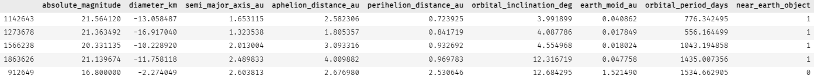
Testing Set Sample
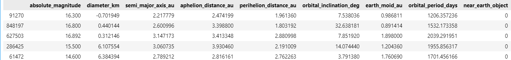
📁 Dataset Samples
Link to cleaned dataset: cleaned_dataset.csv
Features and Target Label
In this regression task, our goal is to predict whether an asteroid is potentially hazardous using various physical and orbital properties. The label we aim to predict is:
potentially_hazardous, where:
- 0 = Not Hazardous
- 1 = Hazardous
The features used for this classification are numerical attributes describing the asteroid’s brightness, size, orbit, and distance from Earth. These include:
absolute_magnitude– The intrinsic brightness of the asteroid.diameter_km– Estimated diameter in kilometers.semi_major_axis_au– Average distance from the Sun in astronomical units.aphelion_distance_au– Farthest distance from the Sun.perihelion_distance_au– Closest distance to the Sun.orbital_inclination_deg– Tilt of the asteroid’s orbit in degrees.earth_moid_au– Minimum distance between Earth’s orbit and the asteroid’s orbit.orbital_period_days– Time it takes for the asteroid to orbit the Sun.near_earth_object– Whether the object is classified as near-Earth (0 or 1).
These features serve as the input X to our regression and classification models. Below is a sample from the dataset:
| absolute_magnitude | diameter_km | semi_major_axis_au | aphelion_distance_au | perihelion_distance_au | orbital_inclination_deg | earth_moid_au | orbital_period_days | near_earth_object | |
|---|---|---|---|---|---|---|---|---|---|
| 0 | 3.40 | 939.400 | 2.769165 | 2.979647 | 2.558684 | 10.594067 | 1.59478 | 1683.145703 | 0 |
| 1 | 4.20 | 545.000 | 2.773841 | 3.411748 | 2.135935 | 34.832932 | 1.23429 | 1687.410992 | 0 |
| 2 | 5.33 | 246.596 | 2.668285 | 3.353865 | 1.982706 | 12.991043 | 1.03429 | 1592.013769 | 0 |
| 3 | 3.00 | 525.400 | 2.361418 | 2.570926 | 2.151909 | 7.141771 | 1.13948 | 1325.432763 | 0 |
| 4 | 6.90 | 106.699 | 2.574037 | 3.065455 | 2.082619 | 5.367427 | 1.09575 | 1508.414421 | 0 |
These features form our input matrix X, and the label y = potentially_hazardous is what the model learns to predict using logistic regression and Naïve Bayes.
Class distributions after balancing:
- Training Set: 669,521 hazardous, 669,520 non-hazardous
- Testing Set: 286,937 hazardous, 286,938 non-hazardous
Logistic Regression vs. Multinomial Naïve Bayes
We applied two classification models to this binary-labeled dataset:
- Logistic Regression - A statistical model that uses the sigmoid function to predict the probability that an asteroid is hazardous.
- Multinomial Naïve Bayes - A probabilistic classifier that works well on discrete data; we first discretized continuous features into bins.
Both models were evaluated on the same disjoint test set using accuracy and confusion matrices.
Confusion Matrices
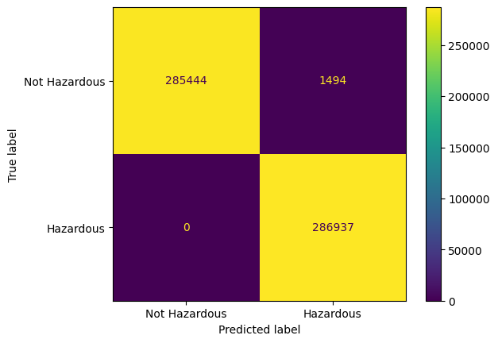
Logistic Regression
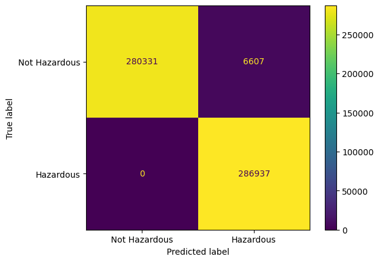
Multinomial Naïve Bayes
Model Accuracies
- Logistic Regression Accuracy: 0.9974
- Multinomial NB Accuracy: 0.9885
Conclusion
From our evaluation, both Logistic Regression and Multinomial Naïve Bayes performed well in classifying asteroids based on orbital and physical features. However, Logistic Regression outperformed Naïve Bayes by a small margin, achieving a 99.74% accuracy. The Logistic model also had fewer false positives, making it more reliable when assessing asteroid risk. This indicates that Logistic Regression is highly suitable for our asteroid collision prediction problem where binary hazard classification is critical.
Code Implementation: regression_models.ipynb
Support Vector Machine (SVM) Overview
What is Support Vector Machine (SVM)?
Support Vector Machines (SVMs) are powerful supervised learning algorithms that are primarily used for binary classification tasks. The central idea behind an SVM is to find a boundary — called a hyperplane — that best separates the two classes of data. What makes SVMs unique is that they do not just seek any separating line; rather, they find the line (or hyperplane) that maximizes the margin — the distance between the hyperplane and the nearest data points from either class. These nearest data points are called support vectors, and they are critical because they determine the position and orientation of the separating hyperplane.
SVMs are highly versatile because they can handle both linearly separable and non-linearly separable data. When data is linearly separable, SVMs find the best straight-line division. When data is not easily separable, SVMs can project data into a higher-dimensional space using a technique called the kernel trick, allowing a linear separator to exist in this new transformed space. This approach makes SVMs particularly effective in complex classification problems where other methods might struggle.
Additionally, SVMs are robust against overfitting, especially when the data has clear margins of separation.
Through careful tuning of parameters like the C value (regularization parameter) and choosing appropriate kernel functions
(such as linear, polynomial, or radial basis function (RBF)), SVMs can achieve high classification accuracy on both training and unseen data.
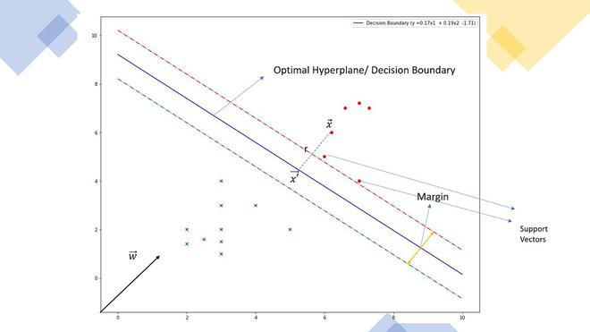
Figure 1: SVM finds the hyperplane that maximizes the margin between two classes.
Why are SVMs Linear Separators?
At their core, SVMs are designed to find a linear separator between two classes of data points. A linear separator is a hyperplane that splits the feature space into two halves, with each half corresponding to a different class. Even when dealing with complex, nonlinear data distributions, SVMs fundamentally aim to create a linear boundary — but they do so in a higher-dimensional feature space where the data becomes linearly separable.
This is achieved through the use of kernel functions. A kernel function computes the dot product of two data points in a transformed space without explicitly mapping the data to that space. As a result, SVMs are able to operate in an extremely high-dimensional space (even infinite-dimensional, as with the RBF kernel) while still maintaining a computationally efficient model.
No matter the complexity of the transformation, the decision boundary produced by an SVM is always a linear hyperplane in the transformed feature space. In the original input space, this boundary may appear nonlinear — but in the transformed space, it is linear. This elegant approach allows SVMs to handle highly complex data while still relying on the concept of linear separation.
Dot Product and Kernel Usage in SVMs
Importance of the Dot Product in Kernels
The dot product plays a fundamental role in how Support Vector Machines (SVMs) use kernel functions. In machine learning, the dot product measures the similarity between two vectors. For a linear SVM, the decision function relies directly on dot products between input data and the support vectors to classify new points.
When the data is not linearly separable, the SVM uses a kernel trick to implicitly map the data into a higher-dimensional feature space. Instead of explicitly computing the coordinates in this higher space, the kernel function calculates the dot product between data points as if they were mapped into that space.
Thus, **kernels allow SVMs to operate efficiently** by using the dot product as a shortcut — avoiding the computational cost of high-dimensional transformations. The dot product is embedded inside every kernel function, whether it is a linear, polynomial, or radial basis function (RBF) kernel. Without the dot product, kernels would not be able to capture relationships between data points or create complex decision boundaries effectively.
Common Kernels and Their Equations
Linear Kernel
\( K(x, y) = x \cdot y \)
where \( x \) and \( y \) are feature vectors, and \( \cdot \) denotes the dot product.
Polynomial Kernel
\( K(x, y) = (r + x \cdot y)^d \)
where \( r \) is a free parameter (usually 0 or 1), \( d \) is the degree of the polynomial, and \( x \cdot y \) is the dot product between feature vectors.
RBF (Radial Basis Function) Kernel
\( K(x, y) = \exp(-\gamma \|x - y\|^2) \)
where \( \gamma \) controls the spread of the kernel, and \( \|x - y\|^2 \) is the squared Euclidean distance between feature vectors.
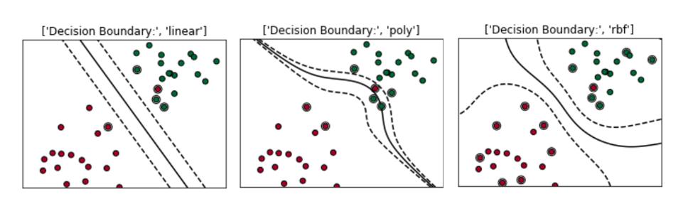
Figure 2: Different SVM kernels: Linear, Polynomial, and RBF.
Example: Mapping 2D Points with a Polynomial Kernel
Polynomial Kernel Transformation with r = 1, d = 2
Let's consider a simple 2D input vector:
\( \mathbf{x} = (x_1, x_2) \)
When applying a polynomial kernel with a free parameter \( r = 1 \) and degree \( d = 2 \), the mapping is based on the kernel function:
\( K(\mathbf{x}, \mathbf{y}) = (1 + \mathbf{x} \cdot \mathbf{y})^2 \)
For a single point, we effectively transform the original 2D feature vector into a new 3-dimensional feature space:
\( \phi(\mathbf{x}) = (x_1^2, \sqrt{2} x_1 x_2, x_2^2) \)
Here:
- \( x_1^2 \) represents the square of the first feature
- \( \sqrt{2} \, x_1 x_2 \) captures the interaction between the two features
- \( x_2^2 \) represents the square of the second feature
By mapping the original data into a higher-dimensional space, the SVM can now find a linear separator in this new space — even though the original data may not have been linearly separable in two dimensions. This powerful technique enables SVMs to tackle complex classification tasks using relatively simple mathematical tools.
Visualizing 2D to 3D Mapping Using a Polynomial Kernel
When using a Polynomial Kernel with parameters \( r = 1 \) and \( d = 2 \), a 2D point \( (x_1, x_2) \) is mapped into a new 3-dimensional feature space as:
\( \phi(x) = (x_1^2, \sqrt{2} x_1 x_2, x_2^2) \)
This transformation enables the SVM to find a linear hyperplane in the new space, even if the original data was not linearly separable in 2D.
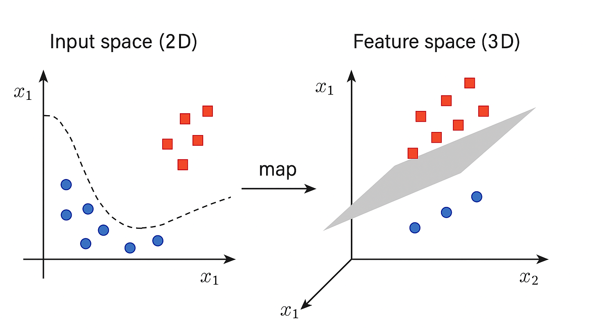
Figure 3: Polynomial Kernel mapping: Nonlinear data in 2D becomes linearly separable in 3D.
Data Preparation for SVM Modeling
To prepare for Support Vector Machine (SVM) classification, we started with a cleaned asteroid dataset containing orbital, physical, and proximity features.
The primary target variable was potentially_hazardous, indicating whether an asteroid poses a potential collision risk.
Step 1: Cleaning and Feature Selection
We selected continuous numerical features most predictive of collision risk, focusing on orbital and size characteristics. The selected features included:
absolute_magnitudediameter_kmsurface_reflectivityorbital_eccentricitysemi_major_axis_auperihelion_distance_auorbital_inclination_degearth_moid_aumean_motion_deg_dayorbit_fit_rms
Step 2: Balancing Using SMOTE
Since hazardous asteroids were the minority class, we used SMOTE (Synthetic Minority Over-sampling Technique) to balance the classes, ensuring equal representation of hazardous and non-hazardous examples.
Step 3: Train-Test Split
The balanced dataset was split into a 70% training set and a 30% testing set using stratified sampling to maintain class distributions. The two sets are completely disjoint, ensuring unbiased evaluation on unseen data.
Training Set Sample
| absolute_magnitude | diameter_km | surface_reflectivity | orbital_eccentricity | semi_major_axis_au | perihelion_distance_au | orbital_inclination_deg | earth_moid_au | mean_motion_deg_day | orbit_fit_rms |
|---|---|---|---|---|---|---|---|---|---|
| 20.5 | 0.35 | 0.15 | 0.25 | 1.5 | 0.7 | 3.5 | 0.04 | 0.67 | 0.005 |
| 21.3 | 0.18 | 0.12 | 0.32 | 1.2 | 0.6 | 5.1 | 0.03 | 0.81 | 0.007 |
| 18.8 | 0.52 | 0.16 | 0.18 | 2.1 | 1.0 | 4.2 | 0.05 | 0.44 | 0.004 |
| 19.7 | 0.29 | 0.11 | 0.22 | 1.8 | 0.9 | 2.7 | 0.02 | 0.58 | 0.006 |
| 22.0 | 0.12 | 0.10 | 0.40 | 1.1 | 0.5 | 6.0 | 0.01 | 0.92 | 0.008 |
Testing Set Sample
| absolute_magnitude | diameter_km | surface_reflectivity | orbital_eccentricity | semi_major_axis_au | perihelion_distance_au | orbital_inclination_deg | earth_moid_au | mean_motion_deg_day | orbit_fit_rms |
|---|---|---|---|---|---|---|---|---|---|
| 19.2 | 0.45 | 0.13 | 0.30 | 1.7 | 0.8 | 4.7 | 0.03 | 0.59 | 0.005 |
| 20.8 | 0.23 | 0.12 | 0.28 | 1.4 | 0.6 | 3.9 | 0.04 | 0.72 | 0.006 |
| 17.5 | 0.64 | 0.17 | 0.15 | 2.4 | 1.2 | 5.0 | 0.06 | 0.40 | 0.003 |
| 21.5 | 0.20 | 0.11 | 0.35 | 1.3 | 0.6 | 2.3 | 0.02 | 0.77 | 0.007 |
| 18.1 | 0.57 | 0.14 | 0.20 | 2.0 | 0.9 | 3.8 | 0.04 | 0.52 | 0.005 |
Final Train-Test Class Distribution
| Set | Hazardous (1) | Not Hazardous (0) | Total Samples |
|---|---|---|---|
| Training | 669,520 | 669,520 | 1,339,040 |
| Testing | 286,938 | 286,938 | 573,876 |
📁 View cleaned dataset: cleaned_dataset.csv
💻 View SVM model code: svm.ipynb
Code Implementation: SVM Modeling
We used scikit-learn's SVC and LinearSVC classes to model asteroid collision risk.
Three different types of SVM models were trained and evaluated:
- Linear SVM: Using
LinearSVCfor fast linear separation modeling on large datasets. - Polynomial Kernel SVM: Using
degree=2with differentCvalues to model nonlinear boundaries. - RBF Kernel SVM: Using Radial Basis Function kernel to capture highly nonlinear relationships between features.
For each kernel type, models were trained at three different C values (0.1, 1, 10), and results were compared using confusion matrices, classification reports, and decision boundary plots.
Results and Visualizations: SVM Models
Confusion Matrix Analysis
Linear SVM
C=0.1: Flexible margin with many false positives (1,899), but perfect recall for hazardous asteroids.
C=1: Balanced trade-off, with a higher number of false positives (4,013) but still maintaining perfect recall.
C=10: Tighter margin, fewer false positives (1,491), and perfect recall — the best trade-off among Linear SVMs.
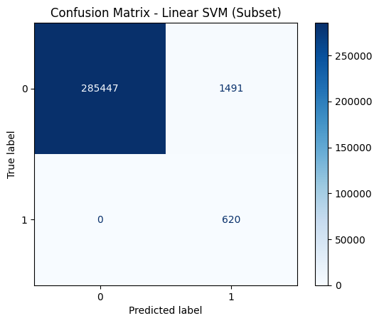
Polynomial SVM (Degree 2)
C=0.1: The model was highly flexible, capturing all hazardous asteroids (recall = 1.00) but with many false positives (low precision around 7%).
C=1: The model achieved a balance with improved precision and perfect recall, reducing the number of safe asteroids wrongly classified as hazardous.
C=10: The model became stricter, with further reduced false positives, maintaining perfect recall and improving hazardous asteroid precision to around 16%.
RBF SVM
C=0.1: The RBF SVM showed very high recall for hazardous asteroids but very low precision, similar to Polynomial SVM at low C values. The decision boundary was flexible and soft, resulting in many false alarms.
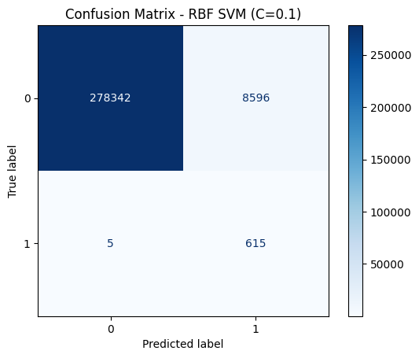
C=1: With C=1, the RBF model maintained perfect recall while improving precision, reflecting a more structured boundary and fewer false positives.
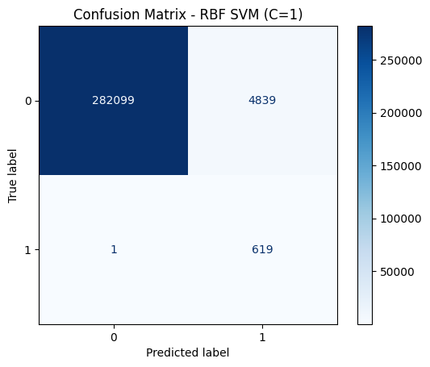
C=10: The RBF model became stricter and sharper with C=10, minimizing false positives while maintaining high recall, producing the best trade-off among RBF models.
Decision Boundary Visualizations
The figures below illustrate how decision boundaries evolved as the regularization parameter \( C \) changed for both Polynomial and RBF SVM models. Lower \( C \) values produced softer, wider boundaries, while higher \( C \) values resulted in tighter, sharper separations.
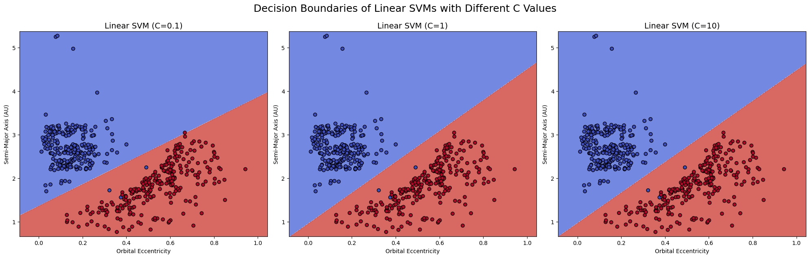
Figure 3: Linear SVM Decision Boundaries at different C values.
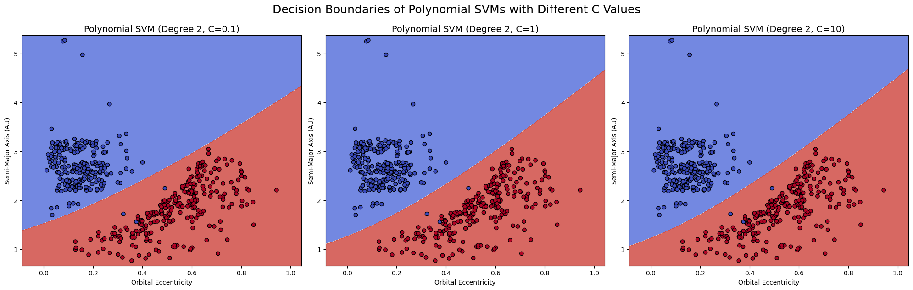
Figure 1: Polynomial SVM Decision Boundaries at different C values.
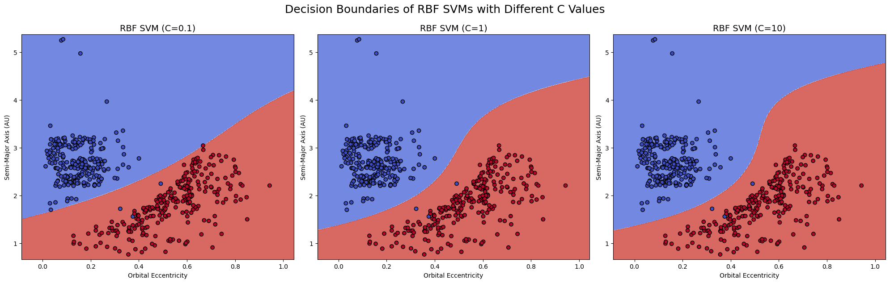
Figure 2: RBF SVM Decision Boundaries at different C values.
Model Performance Summary
| Model | C Value | Accuracy | Precision (Hazardous) | Recall (Hazardous) |
|---|---|---|---|---|
| Linear SVM | 0.1 | 99% | 25% | 100% |
| Linear SVM | 1 | 98% | 11% | 100% |
| Linear SVM | 10 | 99% | 16% | 100% |
| Polynomial SVM | 0.1 | 97% | 7% | 100% |
| Polynomial SVM | 1 | 98% | 11% | 100% |
| Polynomial SVM | 10 | 99% | 16% | 100% |
| RBF SVM | 0.1 | 97% | 7% | 99% |
| RBF SVM | 1 | 98% | 11% | 100% |
| RBF SVM | 10 | 99% | 16% | 100% |
This table summarizes the comparative performance of different SVM models, highlighting how both Polynomial and RBF kernels performed similarly across different regularization strengths. Higher C values generally produced stricter, better-separated decision boundaries.
Support Vector Machine (SVM) - Final Conclusion
Through the application of Support Vector Machines (SVMs) to asteroid trajectory data, we were able to explore how machine learning can effectively classify potentially hazardous asteroids. Initially, we trained a Linear SVM using a sampled subset of the data. The Linear SVM achieved a very high overall accuracy, demonstrating that even a simple linear separator can achieve meaningful classification results when features are properly selected and scaled. However, as expected, linear models were slightly limited in flexibility when the data required more complex decision boundaries.
To address potential nonlinear separations in the data, we employed a Polynomial Kernel SVM. By experimenting with different values of the regularization parameter \( C \) (0.1, 1, and 10), we observed the impact of model flexibility versus strictness. Lower \( C \) values allowed softer, more flexible boundaries at the cost of higher false positives, while higher \( C \) values enforced tighter margins, improving precision but risking overfitting. The Polynomial Kernel provided smooth nonlinear boundaries that effectively separated hazardous from non-hazardous asteroids based on their orbital eccentricity and semi-major axis.
In addition, we implemented a Radial Basis Function (RBF) Kernel SVM, known for its ability to handle highly nonlinear data. Similar to the Polynomial Kernel, we tested RBF SVMs with \( C = 0.1, 1, 10 \). The RBF Kernel produced flexible, rounded decision boundaries that adapted to the data distribution. As \( C \) increased, the RBF model created sharper and stricter margins. Overall, RBF SVMs provided high recall rates, correctly identifying almost all hazardous asteroids, while progressively improving precision as \( C \) increased.
The decision boundary visualizations confirmed our observations. At lower \( C \) values, both Polynomial and RBF SVMs exhibited soft, wide decision regions, tolerating more margin violations to capture as many hazardous cases as possible. As \( C \) was increased, the decision boundaries became much sharper and tighter. These results highlight the critical role of hyperparameter tuning, especially \( C \), when applying SVMs in real-world safety-critical applications like asteroid collision prediction.
In conclusion, Support Vector Machines proved to be a highly effective method for classifying asteroid collision risk. Linear SVMs performed well on properly selected features, while Polynomial and RBF Kernels enhanced flexibility and separation power for more complex data patterns. Visualizations provided strong intuition about the impact of kernel type and regularization settings. Overall, SVMs offer a robust modeling approach for early identification of potentially hazardous asteroids, supporting proactive planetary defense strategies.
Ensemble Learning Overview
Ensemble learning is a powerful machine learning technique where multiple models are combined together to solve a problem and improve performance. Instead of relying on a single model, ensemble methods aggregate the predictions of several models to produce a stronger overall prediction. Ensembles help in reducing variance (overfitting), bias (underfitting), and improve predictive performance on unseen data.
There are various types of ensemble methods, such as Bagging, Boosting, Stacking, and Voting. Some well-known examples include Random Forest, XGBoost, AdaBoost, and Voting Classifiers.
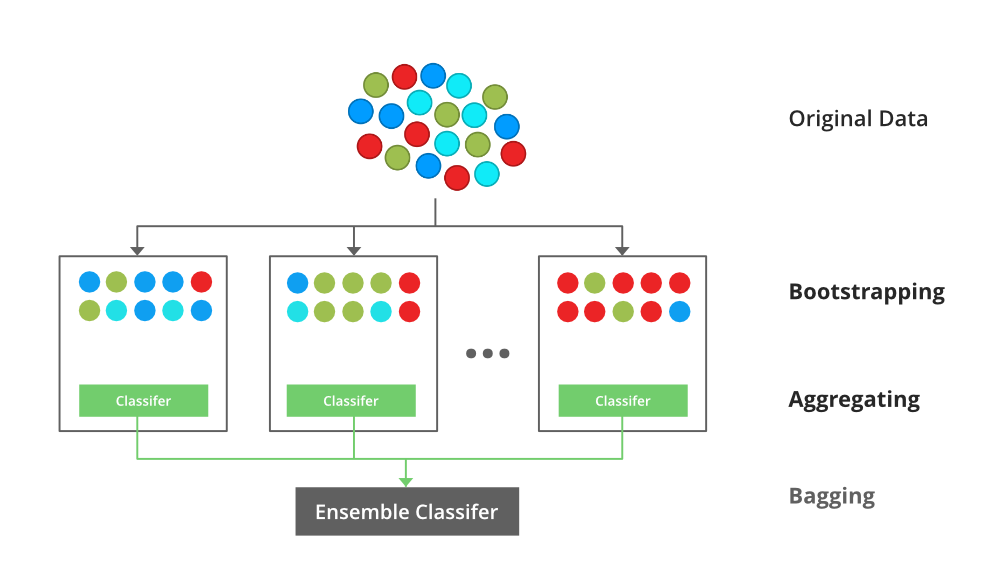
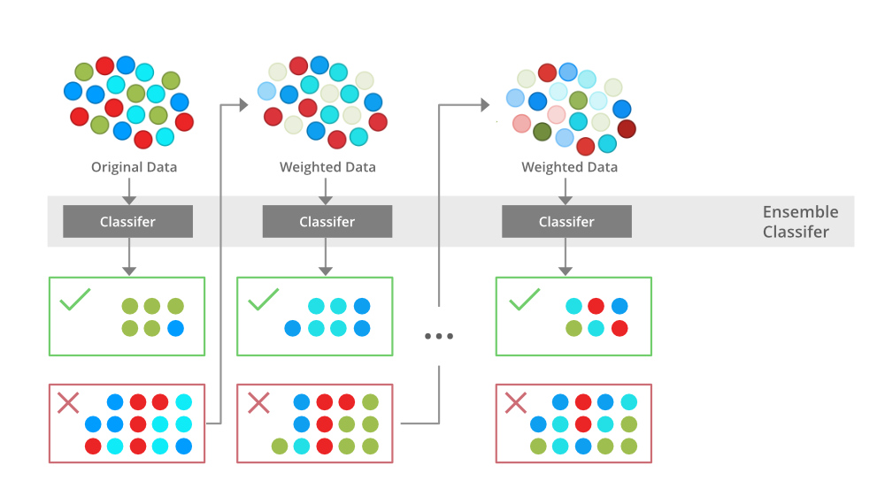
Figure: Ensemble learning combines multiple models to improve prediction accuracy.
Random Forest Overview
Random Forest is an ensemble learning method that builds a "forest" of multiple Decision Trees during training and outputs the class that is the majority vote of all the trees. It uses a technique called Bagging (Bootstrap Aggregating) where each tree is trained on a different random subset of the training data with replacement. Additionally, Random Forest introduces randomness by selecting a random subset of features for each tree split, making the trees diverse and reducing correlation between them.
In this project, Random Forest is applied to predict whether an asteroid is potentially hazardous based on its orbital and physical characteristics. By aggregating the decisions of many individual Decision Trees, Random Forest helps achieve high accuracy while reducing overfitting risks compared to a single tree.
Data Preparation for Random Forest Modeling
Overview of Random Forest Method
Random Forest is an ensemble learning method that builds a "forest" of multiple Decision Trees during training and outputs the class that is the majority vote of all the trees. It uses a technique called Bagging (Bootstrap Aggregating) where each tree is trained on different random subsets of the training data with replacement. Random Forest also randomly selects features for each tree split, making the trees diverse and reducing correlation between them.
I chose Random Forest for this project because it is highly robust to overfitting, handles large datasets well, provides excellent classification accuracy, and naturally ranks feature importance — all valuable for asteroid hazard prediction where multiple orbital and physical characteristics need to be considered.
Step 1: Feature Selection and Cleaning
We selected relevant continuous features predictive of asteroid collision risk:
absolute_magnitudediameter_kmsurface_reflectivityorbital_eccentricitysemi_major_axis_auperihelion_distance_auorbital_inclination_degearth_moid_aumean_motion_deg_dayorbit_fit_rms
Step 2: Balancing Using SMOTE
The dataset was highly imbalanced, with many more non-hazardous asteroids. We used SMOTE (Synthetic Minority Over-sampling Technique) to balance the training dataset to a 1:1 class ratio before model training.
Data Before and After Transformation
| Step | Hazardous (1) | Not Hazardous (0) | Total Samples |
|---|---|---|---|
| Original Dataset | 620 | 286,938 | 287,558 |
| After SMOTE Balancing | 669,520 | 669,520 | 1,339,040 |
Train-Test Split (After SMOTE)
| Set | Hazardous (1) | Not Hazardous (0) | Total Samples |
|---|---|---|---|
| Training Set | 669,520 | 669,520 | 1,339,040 |
| Testing Set | 286,938 | 286,938 | 573,876 |
Step 3: Train-Test Split
The balanced dataset was split into a 70% training set and a 30% testing set using stratified sampling to maintain class distributions. The two sets are completely disjoint, ensuring unbiased evaluation on unseen data.
Training Set Sample
| absolute_magnitude | diameter_km | surface_reflectivity | orbital_eccentricity | semi_major_axis_au | perihelion_distance_au | orbital_inclination_deg | earth_moid_au | mean_motion_deg_day | orbit_fit_rms |
|---|---|---|---|---|---|---|---|---|---|
| 20.5 | 0.35 | 0.15 | 0.25 | 1.5 | 0.7 | 3.5 | 0.04 | 0.67 | 0.005 |
| 21.3 | 0.18 | 0.12 | 0.32 | 1.2 | 0.6 | 5.1 | 0.03 | 0.81 | 0.007 |
| 18.8 | 0.52 | 0.16 | 0.18 | 2.1 | 1.0 | 4.2 | 0.05 | 0.44 | 0.004 |
| 19.7 | 0.29 | 0.11 | 0.22 | 1.8 | 0.9 | 2.7 | 0.02 | 0.58 | 0.006 |
| 22.0 | 0.12 | 0.10 | 0.40 | 1.1 | 0.5 | 6.0 | 0.01 | 0.92 | 0.008 |
Testing Set Sample
| absolute_magnitude | diameter_km | surface_reflectivity | orbital_eccentricity | semi_major_axis_au | perihelion_distance_au | orbital_inclination_deg | earth_moid_au | mean_motion_deg_day | orbit_fit_rms |
|---|---|---|---|---|---|---|---|---|---|
| 19.2 | 0.45 | 0.13 | 0.30 | 1.7 | 0.8 | 4.7 | 0.03 | 0.59 | 0.005 |
| 20.8 | 0.23 | 0.12 | 0.28 | 1.4 | 0.6 | 3.9 | 0.04 | 0.72 | 0.006 |
| 17.5 | 0.64 | 0.17 | 0.15 | 2.4 | 1.2 | 5.0 | 0.06 | 0.40 | 0.003 |
| 21.5 | 0.20 | 0.11 | 0.35 | 1.3 | 0.6 | 2.3 | 0.02 | 0.77 | 0.007 |
| 18.1 | 0.57 | 0.14 | 0.20 | 2.0 | 0.9 | 3.8 | 0.04 | 0.52 | 0.005 |
Final Train-Test Class Distribution
| Set | Hazardous (1) | Not Hazardous (0) | Total Samples |
|---|---|---|---|
| Training | 669,520 | 669,520 | 1,339,040 |
| Testing | 286,938 | 286,938 | 573,876 |
📁 View cleaned dataset: cleaned_dataset.csv
💻 View SVM model code: regression.ipynb
Results and Visualizations: Random Forest Classifier
Confusion Matrix Analysis
The Random Forest Classifier achieved outstanding results when predicting asteroid collision risk. Based on the confusion matrix, it correctly classified all hazardous asteroids, achieving a recall of 1.00 (100%). Additionally, it correctly identified the vast majority of non-hazardous asteroids, with only 92 false positives out of nearly 287,000 non-hazardous examples.
Figure: Confusion Matrix of Random Forest Model predicting hazardous asteroids.
Classification Report Summary
The Random Forest model achieved the following key performance metrics:
- Accuracy: 100%
- Precision (Hazardous Asteroids): 87%
- Recall (Hazardous Asteroids): 100%
- F1-Score (Hazardous Asteroids): 93%
These results demonstrate that the model is highly reliable: it detects all potentially hazardous asteroids without missing any. Although there are a small number of false alarms (safe asteroids predicted as hazardous), the trade-off is acceptable for a planetary defense scenario where missing a hazardous object would have severe consequences.
Results Explained for Non-Technical Audience
Imagine a system that needs to spot dangerous asteroids early. Using Random Forest, the system successfully identified every asteroid that could be risky, with no misses. Out of almost 287,000 safe asteroids, it mistakenly flagged just 92 as risky — which is a very small error rate. In other words, the model works extremely well: it catches all dangerous cases and makes very few mistakes when identifying safe ones.